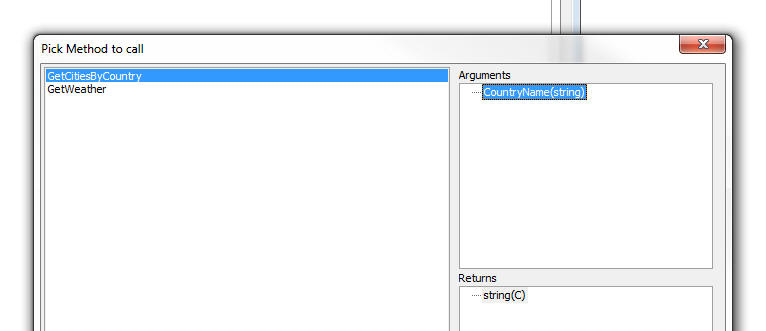

Videos
| UX Component | PhoneGap - Storing Large Amounts of Data for Off-line Use in Files on a Device |
When you build an application for disconnected
usage, the data you want to have available while
you are disconnected is stored in List controls
in the UX which are persisted to Local Storage
on the device. Local Storage is, however,
limited in size. In some cases your application
will need to have a large amount of read-only
data available (such as price lists, etc.) and
instead of storing this information in Local
Storage you would like to store the data in
files in the file system of the device. If your application is a PhoneGap application, then you can store large amounts of data in files on the device as shown in this video tutorial. Watch Video - Part 1 Watch Video - Part 2 Watch Video - Part 3 Watch Video - Part 4 Watch Video - Part 5 Watch Video - Part 6 Watch Video - Part 7 Watch Video - Part 8 Watch Video - Part 9 Download Component Date added: 2015-08-01 |
| UX Component | PhoneGap Shell |
Building and testing PhoneGap applications can
be tedious because every time you want to test a
change to your application you have to submit
the application to the PhoneGap build service
and then load the app onto your device for
testing. This process can be dramatically shortened by building a PhoneGap shell application and then testing your application inside the shell. Every time you make a change to the component you are working on, you no longer have to submit it to PhoneGap build - you simply click the refresh button inside the shell, where the component is running. In this video we show how you can easily build a PhoneGap shell component. Watch Video - Part 1 Watch Video - Part 2 Date added: 2015-08-01 |
| UX Component | PhoneGap - Using the Image Picker Plugin To Select Multiple Images from the Photo Library |
The List control allows you to use the camera on
a mobile device to take a picture and then when
the List data are synchronized, upload the
picture to a server (such as Amazon S3 or the
AlphaAnywhere server) and store the picture
filename in the database. However, there are
situations where you want to capture multiple
pictures and adding one record at a time to a
List and then using the camera to get the image
for each record would be tedious. It would be
preferable to be able to open the Image Library
(i.e. the Photo Roll) on the device and select
as many images as you want. Each selected image
would add a new row to a List control. This video shows how the PhoneGap Image Picker plugin can be used to do this. Watch Video - Part 1 Watch Video - Part 2 Watch Video - Part 3 Date added: 2015-08-09 |
| UX Component | Setting the Height of an Object to 100% |
Setting the height of to 100% might seem like a
natural thing to want to do, but in reality it
is complicated because while it is clear what
you MEAN by this, the HTML layout engine may not
know what the height of the containing element
is. or put more accurately, when the the element
you want to size at 100% height is initially
rendered, its container may not have been
properly sized yet. This is especially true with Panels which need to be resized after initial render so that they fit the device. Fortunately, Panels have an onSize event that exposes a height property, which you can use to set the absolute height of an element so that it fills a Panel, as shown in this video. Watch Video Download Component Date added: 2015-08-25 |
| UX Component | Building 'Real-time' Applications Using Web-Sockets |
In a typical web-application the client makes a
request to the server and the server responds.
The server cannot send information to any client
unless the client first requests it. However, in
'real-time' applications the server maintains a
connection to the client and there is a two way
channel for sending and receiving messages. When
the server, or any of the connected clients,
sends a message, the message is broadcast to all
of the connected clients and an event will be
triggered on each client when a message is
received. The event handler can choose to handle
the message, or to ignore it. A common pattern (which is discouraged because it does not scale) is to user timer events on a Grid or UX to make periodic callbacks to the server to see if there is any 'new information' that is of interest to the client. Real-time applications built on web-sockets are much more efficient than the pattern of executing Ajax callbacks on a timer. This video demonstrates how a real-time application can be built. The video demonstrates a chat application where any client can post a message that is instantly seen by all of the other clients. Watch Video - Part 1 Watch Video - Part 2 Watch Video - Part 3 Download Component Date added: 2015-09-03 (Requires build 4540 or above) |
| UX Ccomponent | Client-side Data Cache |
The client-side data cache allows you to
retrieve data from the server. Once the data has
been loaded into the data cache, you can use the
data in your UX component. The data in the
client-side data cache can be persisted (either
to Local Storage or to the file system in a
PhoneGap application) so that the data is
available even when you no longer have a
connection. The client-side data cache is particularly useful in PhoneGap applications that are designed for disconnected usage because you can store a large amount of data on the device and have this data available to your application. In this video we show how the client-side data cache is set up and we demonstrate how it persists data to Local Storage and to the file system in a PhoneGap application. Watch Video - Part 1 Watch Video - Part 2 Watch Video - Part 3 Watch Video - Part 4 Watch Video - Part 5 Watch Video - Part 6 Download Component Date added: 2015-09-05 (Requires build 4541 or above) |
| UX Component | Map Control - Adding Multiple Markers to a Map using Client-side Data |
Action Javascript has a method (in Map Control
Actions) to add multiple markers to a map.
However, this action assumes that you will be
making an Ajax callback to the server to do a
query to get the list of latitude/longitude
values for each marker you want to add to the
map. But what if you already have a list of data
on the client-side with latitude/longitude
values? Making an Ajax callback to the server
under these circumstances is unnecessary. In this video we show how a List control, which has latitude/longitude values for each row, can be used as the data source for the markers and how a marker for each row in the List can be added to the map without having to make an Ajax callback. Watch Video Download Component Date added: 2015-09-10 |
| Xbasic | Calling into Node.JS from Xbasic - Node Services Defined at the Project Level |
You can define global Node services (i.e.
services that can be called from any application
on your server), or you can define Node services
at the individual project level. Node services
defined at the project level get 'published'
like any other components, or pages in your
application when you publish your applications.
In this video we show how you can define and consume Node services in a web project. Watch Video - Part 1 Watch Video - Part 2 Download Component Date added: 2015-09-12 |
| UX and Grid Component | Using OData Data Sources |
OData is a standard method of access data using
a REST api. Alpha Anyhwere allows you to easily
consume data from OData services. In this video we show how a connection string is defined to connect to an OData service and then how a Grid component is built to go against the OData service. Watch Video - Part 1 Watch Video - Part 2 In the next video we show how a UX component with a List can be built using the OData data source: Watch Video - Part 3 Date added: 2015-09-12 |
| UX Component | Finding Controls in a Large UX Component |
When editing a UX component with a large number
of controls, finding the control that you want
to edit can be difficult. The Quick Find genie
makes it very easy to locate the control that
you want to edit. Watch Video Date added: 2015-10-07 |
| Xbasic | Validating and Reformatting JSON Data |
Xbasic has many functions that make working with
JSON data easy. Two particularly useful
functions are json_validate() and json_reformat().
These functions are described in this video. Watch Video Date added: 2015-10-22 |
| UX Component - List Control | Converting a List that uses a Static Data Source to a SQL Data Source and Vice-Versa |
It is common when building a UX component that
uses List controls to start off with Lists that
are based on static data (because setting up a
List to use static data is so easy). Once you
have your UX working, you might then want to
convert the List to be based on a SQL database.
A genie allows you to easily export the data
from your static data source to a new table in a
SQL database, or to link your List to an
existing table in a SQL database. You can also easily convert a List that uses a SQL data source to a static data source by importing the data from the SQL table. Watch Video Date added: 2015-11-04 |
| UX Component - List Control | Opening a Pop-up Window with a Button in a List Row - Positioning the Window Relative to the Button |
When you create pop-up windows in a UX control,
a common pattern is to open the window
positioned relatively to the button that
displays the window. If the button is in a row
of a List control, then it is a little trickier
to position the window relative to the the
button that was clicked. This video shows how you can position a dropdown window relative to a button in a List row. Watch Video - Part 1 Watch Video - Part 2 Date added: 2015-11-09 |
| UX Component - List Control | Dynamically Changing Page Size of a Paginated List at Run-time |
In this video we show how you can dynamically
change the page size of a paginated List that is
based on SQL data. Watch Video Download Component Date added: 2015-12-29 |
| UX Component | Executing Client-side Validation Rules Programmatically |
When you define validation rules for controls on
a UX, the rules are evaluated when the UX is
submitted. However, there may be cases where you
want to explicitly (programmatically) evaluate
the validation rules for a set of controls. For example, you might not want to allow the user to go to a different Panel Card if there are validation errors on the current Panel Card. In this video we show how you can programmatically execute the client-side validation rules for a series of controls. Watch Video Download Component Date added: 2015-12-30 |
| UX Component - List Control | Displaying Hierarchical Data in a List |
A common requirement in many mobile applications
is to display cascading data in a List control
(such as a list of menu choices). Some of the
items in the List will have sub-choices. When an
item in the List that has sub-choices is
selected, the List is repopulated with the
sub-choices and a 'back' button is enabled to go
back to the previous level. There is no limit as to how deep this hierarchy of nested Lists can be. Typically, when an item in the List that has no sub-choices is selected, an action associated with that List item is executed. In this video we show how you can build a UX component that uses a List to display an hierarchical menu system. We show how a genie can help you generate the JSON data for the hierarchical menu system and how the List's 'Quick Setup Genie' can be used to configure the List to display the nested Lists defined by the List's JSON data. Watch Video - Introduction Watch Video - Part 1 Watch Video - Part 2 Watch Video - Part 3 Watch Video - Showing Animation for List Transitions Date added: 2016-01-04 |
| UX Component - List Control | Displaying Hierarchical Data From a SQL Table in a List |
In the 'Displaying Hierarchical Data in a List'
video we show how hierarchical data can be
displayed in a List. In that example the data
shown in the List is defined statically. In this
video we show how the data hierarchical data for
the List can be retrieved from a SQL table. The video shows a List with Country names. When the user selects a Country, the List is repopulated showing the Cities in the selected Country and a 'back' button is enabled. When the user selects a City, the Contacts in that City are shown. Watch Video Download Component Addendum: In this next sample component the Xbasic commands that are executed to get the JSON data are replaced with a built-in helper function. When the user clicks on a List 'endpoint', the selected record is shown and can be edited. Download Component Date added: 2016-01-05 |
| UX Component | Structure Explorer |
When you are working with a complex UX component
that has many different Panel Layouts,
Navigators and Cards as well as many Window
containers and Panel Overlays, it can be
difficult to get a sense of the component's
underlying 'structure'. In this video we show how the Structure Explorer can help in getting an overview of how a UX component is structured. Watch Video Date added: 2016-01-05 |
| UX Component | Client-side Data Cache - Populating Dropdown Boxes From the Client-side Data Cache - PhoneGap |
In a PhoneGap application, if your UX contains
Dropdownbox controls, the choices shown in the
Dropdownbox controls will be defined at
design time (when the PhoneGap application
is built). However, in your application you might want the choices in the Dropdownbox controls to be defined at run-time. Your app should make a callback to the server to get current data for the Dropdownbox controls and then persist that data locally so that the next time the app is loaded it already has the data for the Dropdownbox controls. The client-side data cache is ideal for this scenario. In this video we show how you can define client-side data cache items for the data to populate Dropdownbox controls. Watch Video - Part 1 Watch Video - Part 2 Watch Video - Part 3 Download Component Date added: 2016-01-12 |
| UX Component - PanelOverlay | PanelOverlay Windows |
The UX component allows you to display
PanelOverlays that 'float' on top of a Panel. By
showing and hiding the PanelOverlay you can make
the PanelOverlay behave much like a 'window'.
In this video we show how the 'PanelOverlay is window' property is used to turn a PanelOverlay into a window that is initially hidden and shown on demand by executing the 'PanelOverlay window show' action in Action Javascript. Watch Video Download Component Date added: 2016-01-13 |
| UX Component - Custom Controls | Understanding CustomControls |
The UX Component allows you to define two types
of CustomControls - data bound and non-data
bound. In both cases the HTML and Javascript for
the custom control can either be specified at
design-time, or (much more powerfully) generated
by Xbasic at run-time. In this video we introduce the CustomControl found in the 'Other Controls' category of the UX Builder (as opposed to the 'CustomControl' found in the 'Data Controls' category). After introducing the basic concepts of the CustomControl, the video shows how a UX form can be dynamically generated at runtime from a definition that could be read from a database. Watch Video - Part 1 Watch Video - Part 2 Watch Video - Part 3 Watch Video - Part 4 Watch Video - Part 5 Watch Video - Part 6 Watch Video - Part 7 Download Component Date added: 2016-01-19 |
| TabbedUI | Keyboard Shortcuts |
The TabbedUI component is a great way for
navigating to the different components that make
up an application. You can assign keyboard
shortcuts to the different buttons in the
TabbedUI that launch components. Launching a component using a keyboard shortcut can be more efficient than having to visually locate the button in the TabbedUI and then click on it. In this video we show how to assign a keyboard shortcut to a button in the TabbedUI. Watch Video Date added: 2016-01-21 |
| Xbasic | Calling SOAP Web Services from Xbasic |
You can register SOAP web services at the Web
Projects Control Panel and then call methods of
these services from your Xbasic code. In this video we show how to register a SOAP service and then call methods of the service. Watch Video Date added: 2016-01-21 |
| Grid | Using IN clause in SQL Statement and Argument Arrays |
Argument arrays, in combination with the SQL IN
clause are a powerful way to define what records
the Grid should show. In this video we show how you can use argument arrays to define a button on a UX that opens a Grid showing a selected list of records. Watch Video Download Component Date added: 2016-02-10 |
| Xbasic | Working with MongoDB using AlphaDAO |
Alpha Anywhere allows you to connect to a vast
array of SQL databases and then build Grid and
UX components against the SQL data. You can also
use Xbasic (specifically the AlphaDAO object) to
write code that executes SQL commands. You can work with a Mongo database in the same way. In this video we show how you can create an AlphaDAO connection string that points to a Mongo instance - how you can export data from a SQL database to a Mongo database - and how you can build a Grid component against a Mongo database. NOTE: These videos show how the Mongo database is accesses using standard AlphaDAO objects. Alpha Anywhere also provides an API to access Mongo directly. Watch Video - Part 1 Watch Video - Part 2 Watch Video - Part 3 Required build: 4612 Date added: 2016-02-10 |
| UX Component | Understanding Custom Settings |
The UX allows you to define Custom Settings - a
list of named setting values. These custom
settings can be referenced in Javascript code
and also when the component is initially
rendered. Custom Settings are a powerful tool for dynamically configuring certain aspects of a UX component. In this video we introduce the concept of Custom Settings and show some of they ways they can be used. Watch Video - Part 1 Watch Video - Part 2 Download Component Required build: 4614 Date added: 2016-02-14 |
| UX Component - List Control | Pull-past-end to Refresh List Data |
A common pattern in mobile applications is to
allow a user to refresh the data in a List by
pulling down on the List past the top of the
List and if the user pulls down past some
threshold value, to trigger a List refresh once
the user releases the List, and it bounces back
to its initial position. In this video we show how you can implement the 'pull-past-end-to-refresh' pattern in a List control. Watch Video Required build: 4620 Date added: 2016-02-20 |
| PhoneGap | Including Pre-populated SQLite Database Files in a PhoneGap Project |
The UX component has extensive support for
working with SQLite databases in PhoneGap
applications. A common requirement when building
PhoneGap applications is to include
pre-populated SQLite database files as part of
your PhoneGap project. These pre-populated
database files can contain large amounts of
data. Since they are part of the PhoneGap
project, the data in these database files will
be immediately available to your application
when it is loaded, even if there is no
connection. In this video we show how the PhoneGap Builder allows you to define the pre-populated SQLite database files to include in your PhoneGap project. Watch Video 1 Watch Video 2 Required build: 4625 Date added: 2016-02-27 |
| UX Component | Using SQLite in a UX Component in a PhoneGap Project |
Action Javascript has actions that make it easy
to work with a SQLite database on a mobile
device. In this video we demonstrate various actions that can be performed with the Action Javascript SQLite action. Watch Video 1 Watch Video 2 Watch Video 3 Watch Video 4 Required build: 4626 Date added: 2016-02-28 |
| Publishing Web Applications | Using the HTTP Method for Publishing Web Applications |
When you publish a web application to a remote
server, you can choose whether to use FTP or
HTTP to do the actually work of transferring the
files. The HTTP option has more options than the
FTP option, but has some additional setup that
is required. In this video we show how to configure a server to allow HTTP publishing and how to create a Publishing Profile in the Alpha Anywhere IDE that uses HTTP Publishing. Watch Video - Configuring the Server Watch Video - Defining a Publishing Profile Date added: 2016-03-02 |
| UX Component | Vertically Centering Content in a Panel Card |
A common pattern in mobile applications built
using Panels it to vertically center some
content in a Panel Card. The content should be
vertically centered regardless of the device
orientation or size. In this video we show how this is easily done with some Javascript in the Panel Card's onSize event. Watch Video Download Component Date added: 2016-03-04 |
Features
Build 4627: Style Builder - A new Style Builder is available for Alpha Anywhere V3 Styles - Alpha Anywhere styles that were released in older versions of Alpha Five (e.g. MobBlue, MobGreen, GrBlue, etc) are tagged internally as 'version 2' styles. Newer styles (e.g. iOS, iOS7, AndroidLight, AndroidDark) are tagged internally as 'version 3' styles.
A new Style Builder is available for 'version 3' styles. Previously it was not possible to edit a 'version 3' style in the 'version 2' style builder.
Now, when you try to edit a style, Alpha Anywhere automatically selects the appropriate style builder.
There are several ways to get to the style builder. The easiest is to open the UX or Grid component and click the smart field button for 'Edit style in Style Builder' property (which is just below the Style Name property).
You can also select the Edit, Open Web Style Builder command from the menu when the Web Control Panel has focus.
Alpha Anywhere web styles can be stored in one of three places:
- system - styles are stored in the CSS folder in the executable folder -- these styles cannot be directly edited. If you want to edit a 'system' style, you must first make a 'local' or 'global' copy of the style. You will edit the copy of the style.
- local - styles are stored in the CSS folder in the Web Project folder
- global - styles are stored in a special folder that is visible to all web projects in your Workspace.
When you select a style to edit, if you selected a 'system' style, you will get a dialog asking you to make a 'local' or 'global' copy of the style.
When you make a copy of the style you can keep the same name as the source ('system') style, or you can give the style a new name. Since the local or global style is stored in a different folder than the system style, it is perfectly OK to use the same name as the source ('system') style.
If you selected a version 3 style the new style builder will be displayed:
The Style Builder has two distinct modes.
- Code - where you can directly adjust the CSS for the style and create new 'sub-themes' for different control types.
- Adjust - where you can adjust the SASS variables used in the style.
Alpha Anywhere styles sheets are defined using SASS syntax. To learn more about SASS visit http://sass-lang.com/
One huge advantage of SASS syntax is the ability to define variables for many of the setting in the stylesheet, especially colors.
The Adjust mode allows you to easily adjust the SASS variables in your stylesheet. For example if you use the built-in iOS7 stylesheet you will see that the predominant color in the style is blue. By changing a single SASS variable in Adjust mode you can change the entire
The tabs at the bottom on the screen allow you to switch between Adjust mode and Code mode.
Code Mode
In Code mode the left side of the screen has a preview of the style in the top and the actually CSS in the bottom.
The property grid on the right shows all of the "object" types defined in the stylesheet. Examples of "objects" include Textbox, Button, Accordion.
For each object type one or more named sub-types can be defined. The sub-types are called 'sub-themes'. Generally every "object" has at least one 'sub-theme' called 'base'. For some object types only 'base' sub-theme is defined. You can add an arbitrary number of sub-themes for any object type.
A sub-theme defined all of the CSS classnames used to style the object.
At the top of the code window when you are in Code mode you will all of the SASS variables defined in the stylesheet.
You can adjust the variable values directly in the Code window or you can switch to Adjust mode to change the SASS variables.
Build 4627: UX and Grid Component - Open Style Builder - You can now open the Style Builder directly from the UX and Grid component. A new property 'Edit style in Style Builder' appears directly below the 'Style name' property.
Build 4627: Application Server - Open SSL - A new version of OpenSSL is now included with Alpha Anywhere.
OpenSSL 1.0.2g addresses the 'Drown attacks' vulnerability.
Build 4625: UX Component - Sub-theme Picker - Preview - When you pick the sub-theme for any control that supports sub-themes, the picker now shows a preview of all of the available sub-themes.
Build 4625: PhoneGap Builder - SQLite Databases - When you create a PhoneGap project, you can now include pre-populated SQLite database files as part of the PhoneGap project. A new genie allows you to create the SQLite databases that you include with your PhoneGap project.
If your PhoneGap project includes pre-populated SQLite databases, your UX component can work with the data in these SQLite databases using Action Javascript. See 'UX Component - PhoneGap - Using SQLite - Action Javascript' below for more information.
If you are including pre-populated SQLite databases in your project, be sure to specify the following PhoneGap plugins: Device, File, File Transfer, SQLitePluginExt.
To define the SQLite databases that should be part of your PhoneGap project, click the smart field for the SQLite Databases property in the PhoneGap Genie.
This will open a dialog where you can define your SQLite databases.
Your project can include multiple SQLite databases and each database can include multiple tables. Each SQLite database is contained in a single file and this file is automatically added to the Additional Files Required setting in the builder.
You can choose to put all of the tables you want in your SQLite databases in a single SQLite database, or you can use multiple SQLiite databases - the choice is yours.
Once you add a new SQLite database to the above dialog, you can click the Define SQLite Database Contents button to specify the tables that should be in the SQLite database. For each table that you specify you can define how the table should be populated. The options are to perform a SQL query to extract data from any SQL database supported by AlphaDAO, static data, or Xbasic. If you choose the Xbasic option, you can specify Xbasic code that will return data that are used to populate a table.
Once you have defined the SQLite databases, click the Create SQLite Database Files button to actually create the SQLite database files. These files will be created in the www folder in your PhoneGap project.
NOTE: Contrast creating pre-populated SQLite databases with making an Ajax callback to the server and dynamically creating the SQLite database. Dynamically creating SQLite databases is a built-in action in Action Javasascript and it is discussed below. See UX Component - PhoneGap - Using SQLite - Action Javascript.
Build 4624: UX Component - PhoneGap - Using SQLite - Action Javascript - The UX component now has extensive support for working with SQLite databases in a PhoneGap application.
SQLite is a SQL database that is available on your mobile device and is accessible through a PhoneGap plugin. When building disconnected applications, having an on-device SQL database can be extremely useful. It allows you to get rapid access to large amounts of data that are stored on the device (and is therefore available even when there is no connection). You can store significantly more data for offline access than would be possible using Local Storage.
The primary use case for an on-device SQLite database is to make large amounts of 'lookup' information available in a disconnected, mobile application.
Watch Video 1
Watch Video 2
Watch Video 3
Watch Video 4
NOTE: The UX Component Client-side Data Cache is also useful, in PhoneGap applications, for storing large amounts of data on the mobile device for use in offline applications. Your particular application requirements will dictate if the Client-side data cache, or SQLite, is the better solution.
IMPORTANT: To use the SQLite features in a PhoneGap application, your PhoneGap project must load the following plugins: Device, File, File Transfer, SQLitePluginExt. These plugins are all listed in the PhoneGap builder.
NOTE: While it is certainly possible to perform Insert, Update, and Delete actions on the SQLite database that is on a device, there is no built-in mechanism for persisting these changes to the source database on your server. You would be responsible for writing your own code to persist changes to the on-decice SQLite database to your server databases.
A SQLite database is a single file. The SQLite database file can be part of your PhoneGap project, or it can be downloaded to the device by making a callback to a server.
If the SQLite database is part of your PhoneGap project, you will need to list the name of the SQLite database file in the Additional Files Required property in the PhoneGap Builder.
NOTE: For more information on adding SQLite database to a PhoneGap project, see this section : PhoneGap Builder - SQLite Databases.
You can use Action Javascript to download a SQLite database to the mobile device at run-time (see below for more information). When you download the SQLite database to the device at run-time, you can either download an existing SQLite database, or your callback function can dynamically create the SQLite database file.
Action Javascript now has a new action called 'PhoneGap - SQLite Actions' that will allow you to select and configure the type of action you want to perform.
When you select this action, the builder shows the available SQLite actions:
The available action are:
| Command | Description |
| Download SQLite Database from the Server | Downloads a SQLite database file from a server and stores the database file on the mobile device |
| Create SQLite Database on Server then Download to Device | Similar to the 'Download SQLite Database from the Server' action excepting that the SQLite database file is dynamically created on the server before it is downloaded to the device |
| Execute SQL statement(s) | Executes one or more SQL statements. If you execute multiple SQL statements, the statements are automatically wrapped in a transaction so that no changes are made to the database if any of the statements fail. |
| Get Tables in a Database | Lists the tables in a SQLite database. |
Each of these commands in discussed in more detail below.
Download SQLite Database from Server
Use this action to fetch a remote SQLite database file from a server (does not have to be the Alpha Anywhere server) and store the database on the mobile device. Once the database has been downloaded, you can then start executing SQL commands against the tables in the database.
There are two ways in which this action can be used:
- Specify the URL of the remote SQLite database file (using Javascript).
- Make an Ajax callback to the Alpha Anywhere server. The function that handles the callback will be responsible for returning the URL of the SQLite database file.
If you are using option 1, then you will need to specify Javascript code that returns the URL of the SQLite database file.
Examples:
Assume that the SQLite database files is in a folder in the webroot. The relative filename of the SQLite database file is (for example) sqlite/db1.db. Your Javascript code that returns the URL will therefore be:
return 'sqlite/db1.db';
There is no need to specify a protocol for the URL since the resource is relative to the webroot.
If, on the other hand, the SQLite database file was (for example) in an Amazon S3 bucket, your Javascript code might be:
return 'http://name_of_your_s3_bucket.s3.amazonaws.com/sqlitedbfilename.db';
Id you are using option 2, you must specify an Xbasic function that will handle the Ajax callback. The Xbasic function will return the URL of the SQLite database file (by setting the e.URL property in the Xbasic code).
Create SQLite Database on Server then Download to Device
This action is really just a variant of the Download SQLite Database from Server action. The main difference is that the SQLite database to download to the device is created on the fly by Alpha Anywhere and once the database file has been created, a message is sent to the client (i.e. the mobile device) telling it that the SQLite database file has been created and can now be downloaded to the server.
The SQLite database file is created by populating a SQLite database with data obtained from SQL queries (against your SQL Server, Oracle, MySQL etc. data sources), static data, or from Xbasic code (that returns data to be used to populate the SQLite database).
For example, you might define a SQLite database that contains several tables (called say 'table1', 'table2', 'table3', etc.) where:
- table1 - a query on a SQL server database that joins server tables
- table2 - a query on an Oracle table
- table3 - a query on a MySQL table
- table4 - an Xbasic function that calls a REST endpoint to retrieve data
- table5 - an Xbasic function that calls a SOAP service to retrieve data
- table6 - some static data
When you select this action, the builder shows this screen:
The SQLite Database definition property is where you define how the SQLite database will be created. When you click the smart field for this property you get this dialog.
This dialog allows you to define the tables that will added to the SQLite database.
You can add as many tables as you want. Once you have have added a table (by clicking on the Add table) button, you can then define the data source for that table (by clicking on the Edit table definition) button.
When you click the Edit table definition button you get a dialog as shown below where you can define how the SQLite table will be populated.
The choices are:
- SQL Query - any SQL query that returns data
- Static Data - static data - see below for description of the format of the static data
- Xbasic - an Xbasic function that returns data - see before for information on the format of the data that the Xbasic function must return. The Xbasic function can, for example, make calls to REST endpoints, or SOAP services to retrieve the data.
Format for Static Data and Data Returned by Xbasic Functions
If your Query Type is set to either Static or Xbasic, the required format for the data is as shown in the following example:
ID=INTEGER (Primary Key),FirstName=TEXT,LastName=TEXT,Salary=NUMERIC
1,Fred,"Smith",87234
2,Tom,Jones,45234
Note that the data is in CSV (comma separated value) value format. Values can be quoted if they contain commas.
The first row in the data is the field names. The format for the fieldnames is:
fieldname=fieldtype
There is no need to specify a field size for a SQLite table. The
SQLite field types are TEXT, NUMERIC, INTEGER, REAL and BLOB. You
can optionally indicate which column in the primary key by including
the (Primary Key)
keyword after the field type.
Execute SQL statement(s)
This action allows you to execute SQL statements against any SQLite database on the device. You can either execute a single SQL statement, or you can execute multiple statements.
If you execute multiple statements, the statements are wrapped in a transaction, which means that the state of the database is not changed if any of the SQL statements fails.
When you select this action you get the following dialog (shown twice - once for the 'Single' statement case and once for the 'Multiple' statement case).
Executing a Single SQL Statement
The properties in the Dialog are defined below:
- SQLite database name - the name of the SQLite database you want to query.
- Database location - this can either be 'Downloaded' - if the SQLite database was downloaded to the mobile device, or 'Root' - if the SQLite database was part of the PhoneGap package (the SQLite database filename will need to be specified in the Additional Files Required property in the PhoneGap Builder).
- Single SQL statement or multiple SQL statements - set to either Single or Multiple.
- SQL statement to execute - Javascript to return the SQL that you want to execute.
Your SQL statement can optionally reference arguments (similar to SQL::arguments when using AlphaDAO in Xbasic).
For example, this statement does not use arguments:
select * from customers where id = 'ALFKI'
This statement does use arguments:
select * from customers where id = ?
The ? indicates an argument value.
If your SQL statement uses arguments you must defined the argument values in the Arguments property.
- Arguments - Javascript to return an array with values for each of the arguments in your SQL statement. It is important that the length of the arguments array that your Javascript returns exactly matches the number of arguments references in your SQL statement.
For example, if your SQL statement was select * from customers where id = ?
the Javascript that you define for the Arguments property might be:
return ['Alfki'];
- onSuccess - The Javascript to execute if the SQL statement succeeds. In the case where the SQL statement returns data, the data will be in an array called resultArray. If the SQL performed an update, insert or delete, your Javascript can reference these variables: result.rowsAffected - the number of rows affected by the statement, result.insertId - the id of the auto-increment primary key value (for an INSERT command).
Example:
Assume that your SQLite database has a table called customers and you want to populate a List control with the results of this query:
select * from customers where city = 'Boston'
You might set the onSuccess Javascript to:
if(resultArray.length > 0) {
//populate list 'list1' with
data
{dialog.object}.setListColumnsAndPopulate('list1',resultArray);
} else {
alert('No records in query.');
}
- onError - The Javascript to execute if the SQL statement failed.
Executing Multiple SQL Statements
In the case where you are executing multiple SQL statements you must set the SQL definition Javascript property.
Your Javascript must return an object with these properties:
- sql - an array of SQL statements to execute
-
arguments - an array of arrays - each array in the array
has the arguments for the corresponding SQL statement. For
example if the first SQL statement (in the
sql array)
has a single argument, and the second SQL statement has two
arguments, then the array in the
arguments object
might look like this: [
['alpha'], ['beta','gamma'] ]
- onSuccess - an array of function definitions. The first function in the array is called if the first SQL statement in the sql array succeeds, etc.
- onError - an array of function definitions. The first function in the array is called if the first SQL statement in the sql array fails, etc.
Alternatively, your Javascript can return an array of objects. Each object in the array should have these properties:
- sql - the SQL statement to execute
- arguments - optional - an array of arguments for the SQL statement
- onSuccess - optional - the onSuccess function for the SQL statement
- onError - optional - the onError function for the SQL statement
Example:
(This example uses the array of objects method. Notice that the parameters passed into the onSuccess functions are: tx, result, array and transObj.
where:
- tx - the SQLite transaction object
- result - object returned by SQLite
- array - if the SQL was as select statement, the data returned by the query in a Javascript array
- transObj - an object that can be used to pass information from one SQL statement to another.
Notice how the arguments property for the last object in the array calls a function to set one of the argument values. This function can see the transObj variable.
)
var obj = [];
obj.push( { sql: 'drop table if exists cars', onSuccess:
function(tx,result,array,transObj) { alert('table was dropped'); }}
);
obj.push( { sql: 'CREATE TABLE Cars (Id INTEGER PRIMARY KEY, Name
TEXT, Price INTEGER)'} );
obj.push( { sql: 'insert into cars (name,price) values (?,?)',
arguments: ['Ford',1], onSuccess: function(tx,result,array,transObj)
{ transObj.foobar = 123;} });
obj.push( { sql: 'insert into cars (name,price) values (?,?)',
arguments: ['GM',2] } );
obj.push( { sql: 'insert into cars (name,price) values (?,?)',
arguments: ['Honda',3] } );
obj.push( { sql: 'insert into cars (name,price) values (?,?)',
arguments: ['Toyota',function(transObj) { return transObj.foobar; }
] } )
return obj;
NOTE: When you edit the Javascript for the SQL definition Javascript property, the Javascript editor shows extensive help for how to construct the object for the SQL definition object. For example, the help shows how you can do the following task:
- add a new record to the invoiceHeader table
- capture the id of the invoice number in the newly added record (assume that id is an auto-increment field)
- add multiple records to the invoiceItems table using the id that was captured when the invoiceHeader record was added
- rollback the entire transaction if any errors occur.
You can also define these properties:
- Transaction success - the Javascript to execute if ALL of the SQL statements succeeded
- Transaction error - the Javascript to execute if the transaction gets rolled back (because one of the SQL statements failed).
How to Create a New SQLite Database on a Device
When you want to start working with a SQLite database on a mobile device there is no requirement that you either download an exiting SQLite database from the server or include a pre-populated SQLite database in your PhoneGap application. You can simply create a new SQLite database on the fly in your Javascript code.
When you use the 'Execute SQL statement(s)' action in the 'PhoneGap - SQLite Actions' action, you specify the name of the SQLite database name against which the SQL commands should be executed.
If you specify the name of SQLite database that does not exist, then a new SQLite database will automatically be created.
Build 4622: Xdialog - {treatasform} Directive - If a modeless Xdialog is displayed and then all Alpha Anywhere windows (besides the modeless Xdialog) are closed or hidden, then once the last window is hidden, the Workspace itself will be closed.
For example, consider the following sample Xdialog code.
dim dlg_title as c
dlg_title = "test"
dim dlg_body as c
dlg_body = <<%dlg%
%dlg%
dim dlg_event as c
dlg_event = <<%code%
if a_dlg_button = "close" then
ui_modeless_dlg_close(dlg_title)
else if a_dlg_button = "hide" then
controlpanel.hide()
else if a_dlg_button = "show" then
controlpanel.show()
end if
%code%
ui_modeless_dlg_box(dlg_title,dlg_body,dlg_event)
Once you press the 'Hide' button to hide the Control Panel (assuming that there are no other Alpha windows open at the time), the Workspace will closed, and therefore the "Show" button, which is intended to show the Control Panel, will not work.
You can instruct Alpha Anywhere not to enforce this rule by adding the {treatasform} directive to the Xdialog. This will cause Alpha Anywhere to not close the workspace when the last window (not counting the Xdialog) is closed.
dim dlg_title as c
dlg_title = "test"
dim dlg_body as c
dlg_body = <<%dlg%
{treatasform}
%dlg%
dim dlg_event as c
dlg_event = <<%code%
if a_dlg_button = "close" then
ui_modeless_dlg_close(dlg_title)
else if a_dlg_button = "hide" then
controlpanel.hide()
else if a_dlg_button = "show" then
controlpanel.show()
end if
%code%
ui_modeless_dlg_box(dlg_title,dlg_body,dlg_event)
Build 4622: UX Component Builder - Display Line Numbers in the Controls List - You can now turn on the display of line numbers in the control list in the UX builder. In large components, this will make it easier to find a control quickly.
To toggle the display of line numbers, click on the Menu button and select the Toggle line numbers in Controls display menu item.
You can also go to the Properties pane and check the Show line number in Controls list property.
TIP: You can easily navigate to a control by number by pressing the Ctrl-G shortcut key.
Build 4620: UX Component - List Control - Pull-past-End to
Refresh List Data - You can now easily implement the common
'pull-past-end-to-refresh' List data pattern.
Watch Video
To turn on this behavior, open the List builder and check the Has 'pull-to-refresh' behavior property.
You can then configure the settings for the behavior.
The Convert to low level properties checkbox on the builder allows you to see all of the individual properties that get set to implement this behavior. If you want to customize the behavior beyond what this genie allows, check this box.
Build 4616: AlphaDAO - SQL - DateTime Fields - SQL::Resultset.toJSONObjectSyntax() - Datetime fields are now exported using an increased precision. Previously, the default format for date time fields was:
MM/dd/yyyy 0h:0m:0s (or dd/MM/yyyy 0h:0m:0s if set by Windows regional settings).
Now, the default format is:
MM/dd/yyyy 0h:0m:0s 3
Technical Note: This change will solve the
following problem: Assume that you had a SQL table with a field
called (for example) 'ExaminationDate'
and that the value in the field was
2/18/2016 3:24:10 123.
Assume that you then built a UX component with a List control with a
Detail View to allow users to edit this value and that you had write
conflicting checking turned on for the
ExaminationDate
field.
When the user tried to synchronize the data after making a change to
the ExaminationDate
field they would get a write conflict error because the 'old' value
for the ExaminationDate
field was stored as
2/18/2016 3:24:10 and not
2/18/2016 3:24:10 123.
With the above change, the 'old' value for the field stored in the
List will be stored at the field's full precision, and the update
will succeeed.
Build 4614: UX Component - Custom Settings - Custom
settings are named setting values that you can reference in
JavaScript code and in your component definition.
Watch Video
- Part 1
Watch Video
- Part 2
Download Component
To define Custom Settings go to the Properties Pane in the UX builder. The Custom settings property appears in the Advanced section.
Click the smart field and the Custom Settings dialog is shown.
The dialog allows you to create an unlimited number of custom settings. Each custom setting has a name and a value.
If the value is a string, just enter the string value. If the value is a JavaScript object, you must prefix the definition with '{javascript}'. If the value is a function definition, you must also prefix the value with '{javascript}. In the example below, three custom settings are defined showing how the value of the custom setting is set to a string, object and function:
| Custom Setting Name | Value |
| setting1 | Some string value |
| setting2 | {javascript}{name: 'Fred', city: 'Boston'} |
| setting3 | {javascript}function(name) { alert('Hello name.toUpperCase());} |
You can export Custom Setting definitions and import them using the Export and Import hyperlinks at the bottom of the screen.
Using Custom Settings
Custom settings can be used in your Javascript code and also at the time the UX component is rendered.
Using Custom Settings when a Component is Rendered
When you define the properties of a UX component, any place that you define some text you can use a Custom Setting value using this syntax:
[CustomSetting:settingName]
For example, assume you have a Button control in your UX. You could set the Button text to:
[CustomSetting:button1]
If you had defined a Custom Setting called 'button1' with a value of 'Save new record' then when the UX component was rendered, the label on the button would be 'Save new record'.
Using Custom Settings in JavaScript Code
The UX object has a method that allows you to read and set Custom Setting values:
{dialog.object}.customSetting(settingName [, newSettingValue])
If you do not provide the optional second parameter the method is used to read the value of a Custom Setting. If you provide the second parameter, the method is used to update a Custom Setting value.
For example, assume you had defined a Custom Setting called 'string1', with a value of 'this is the value of string1'. You could use this in your JavaScript code:
var txt = {dialog.object}.customSetting('string1');
alert(txt);
If the value of 'string1' had been set to an object (using this for the value: {javascript}{name: 'Fred', city: 'Boston'} ), then your JavaScript might look like this:
var obj = {dialog.object}.customSetting('string1');
alert(obj.name + ' -- ' + obj.city);
If the value of 'string1' had been set to a function (using this for the value: {javascript}function(name) {alert('Hello ' + name);} ), then your JavaScript might look look like this:
var fn = {dialog.object}.customSetting('string1');
//now call the function
fn('Fred');
To set a new value for the 'string1' Custom Setting:
{dialog.object}.customSetting('string1','this is a new value for string1');
Overriding Custom Settings when Opening a UX Component
When you use Action Javascript to define an action that opens a UX component, if the target UX component has defined any Custom Settings, you can override the value of the Custom Settings.
In the image shown below, the Action Javascript action opens a UX called 'uxWithCustomSettings'. Since this UX has defined some Custom Settings, the dialog shows an option to override any of the Custom Setting values.
Note The overrides defined here are applied when the UX is initially rendered. If this action is called from a button and the target UX is opened in a Window and the 'Use cached UX Component' property is checked, the second and subsequent times the button is clicked to open the target UX, the Custom Settings are remain at the values they were set to when the target UX was initially opened.
Using Language and Text Dictionary Tags in Custom Settings
You can use language tags (
Build 4614: UX Component Builder - Buttons and StaticText Objects - Double-clicking on a Button in the UX Builder will now open the editor to edit the click or onClick event for the button. Similarly, double clicking on a static text control will bring up the text editor.
Build 4612: MongoDB - Using MongoDB in Grid and UX Components and with Xbasic AlphaDAO - Alpha Anwhere has an API for working directly with a Mongo database. This API is useful if you want to write your own server side code to query and update a Mongo database. However, if you want to use a Mongo database as the data source for a Grid, or UX component, you cannot use the API.
In order to use Mongo as the data source for a Grid or UX, it is necessary to impose a schema on the Mongo database, much like any SQL table has a schema.
Alpha Anywhere now allows you to define a connection string to a Mongo database (much like you would define a connection string to any SQL database). Once you have define a connection string, you can build Grid and UX components against the Mongo database in exactly the same way that you would build a Grid or UX against any SQL database. You can also use AlphaDAO in Xbasic to perform CRUD operations against the Mongo database
When you define a connection string to a Mongo database you define a schema for each table (i.e. collection) in the database. This schema defines the fields and data type of each field in each table.
When you define a connection string to a Mongo database you define:
- URL of the Mongo service
- Username and password (if required - the Mongo service might have been launched with the -noauth parameter, in which case username and password are not required)
- Name of the Mongo database. This can either be an existing database, are the name of a new Mongo database that you want to create.
- Manifest filename (this the the file where the database schema is defined - it is a JSON file)
The image below shows the connection string builder for a Mongo database.
NOTE: In the above screenshot the manifest filename stats with '.\'. This syntax is used to indicate the the manifest is stored relative to the Web Project folder. In the above example, the manifest will be stored in a folder called 'schemas' in the Web Project folder, and when the project is published, the schema.json file will be published to a folder called 'schemas' in the web root.
Alpha Anywhere has a number of helper function that help you define the schema for the Mongo database.
- If you have an existing Mongo database, Alpha can infer a schema by examining existing data in the Mongo database. You can then tweak the schema that Alpha Anywhere suggests
- You can start with a sample schema that shows the format required for the schema
- You can build a schema from the schema of a SQL database. You give Alpha Anywhere a connection string to a SQL database and then select the list of tables you want in your Mongo schema and Alpha Anywhere will automatically create the schema for you. When you use this option you also have the option of exporting data from the SQL database to your Mongo database.
Structure of the Schema JSON File
A sample schema JSON file is shown below. The JSON file defines two objects, 'schema' and 'collection' and an optional property, 'sourceconnection'.
The 'collection' object contains a property for each collection in the Mongo database and the name of the corresponding schema in the 'schema' object.
For example, the entry in the 'schema' object shown below specifies two schemas, one called 'Categories' and another called 'Employees'. For each schema, the primary key column is specified and the list of columns and their corresponding data type are identified.
The optional 'sourceconnection' identifies if the schema was obtained from a looking at the schema in some other SQL database. If so, the 'sourceconnection' property is the connection string to that database.
{
"schema": {
"Categories": {
"primary": [
"_id"
],
"columns": {
"_id": "String",
"CategoryID": "Number",
"CategoryName": "String",
"Description": "String",
"Picture": "String"
}
}
"Employees": {
"primary": [
"_id"
],
"columns": {
"_id": "String",
"EmployeeID": "Number",
"LastName": "String",
"FirstName": "String",
}
}
},
"collection": {
"Categories": {
"schema": "Categories"
},
"Employees": {
"schema": "Employees"
}
},
"sourceconnection": "::Name::northwind"
}
Creating the Schema
To define the Mongo database schema, click the More... button on the connection string build.
This will open an intermediate dialog:

Then click the 'Edit/create Schema definition...' hyperlink.
This will open a dialog when you can edit the schema definition.
At the bottom of the dialog you will see several hyperlinks:
- Insert sample... -- this will insert a sample schema definition. You can then edit this definition. You would typically use this option if you are creating a new schema for a Mongo database that does not yet have any data in it.
- Guess From Content... - this will examine the data in an existing Mongo database and try to infer the schema by examining the data in the database. See below for more information.
- Copy Schema from Connection.. - this will allow you to create a schema based on the schema of a SQL database. When you click this hyperlink you will be prompted for the connection string that points to the SQL database whose schema you want to copy. You will then be able to select which tables in the SQL database you want to copy. NOTE: If you choose this option, the schema that is created will contain the optional 'sourceconnection' property (discussed above).
- Export data from SQL database to Mongo - this hyperlink will only be present if the schema was created using the Copy Schema from Connection.. button and the schema has a 'sourceconnection' property. You can use this button to populate a Mongo database with data from a SQL database.
More on the 'Guess From Content...' Option
When you click the Guess From Content... button, Alpha Anywhere will examine the data in the Mongo database specified at the 'Database' prompt on the connection string builder. This is the dialog that was displayed before you clicked the 'More...' button to get to the dialogs when you define the schema.
Using a MogoDB Connection String
Once you have built the connection string to the MongoDB database you use it in the same way that you use any other connection string (that connects to SQL databases). You can build Grid and UX components against the Mongo database. You can also use Xbasic and AlphaDAO objects to work with the data in the Mongo database.
When you use a connection string that points to a Mongo database you are essentially using SQL syntax to interact with the Mongo database. Behind the scenes Alpha Anywhere is automatically converting the SQL commands to the appropriate commands that then Mongo API understands.
You can see how Alpha Anywhere makes this translation but turning on the 'Trace SQL' option in the connection string build (shown below). Once you do this, the trace information will be shown in the Trace window (View, Trace window) if you are working in the Alpha Developer Version - i.e. the IDE) or in a folder where your logs are created if you are in the Server.
Here is some sample output from the Trace window showing the SQL statement and how that statement was translated to Mongo commands.
SQL Statement: SELECT FIRST 11 [_id], CustomerID,
CompanyName, ContactName, ContactTitle, City, Country FROM Customers
ORDER BY ContactTitle, [_id]
Time to prepare URL: 0.001
Time to execute REST call: 0.041
Mongo Commands:
{
"verb": "GET",
"collection": "Customers",
"select": "_id , CustomerID , CompanyName , ContactName ,
ContactTitle , City , Country",
"groupby": "",
"where": {},
"orderby": "ContactTitle, _id",
"limit": "TOP 11 "
}
Because Mongo is not a SQL database, there are obviously limitations as to what SQL commands you can send to Mongo. For example, you cannot execute a SQL statement that performs a JOIN since the concept is meaningless to Mongo. You also cannot perform CRUD operations that affect more than a single record. For example, the following SQL statement will update multiple records
UPDATE customers set Status = 'B' where Balance > 100
This will not work if you are connected to a Mongo database if there is more than one record with a Balance that is > 100.
Build 4611: Grid Component - Arguments - Array Arguments - IN Clause in SQL Statements - You can now use the IN clause in a SQL statement in a Grid, where the IN clause is tested against an argument.
For example, you might set the SQL query for a Grid to
Select * from customers where customerId IN (:array_customerIds)
IMPORTANT: The parentheses around the argument in the above SQL statement are required when using an IN clause.
The argument in the above SQL is 'array_customerIds'. The 'array_' prefix in the array name is significant. It informs Alpha Anyhwere that the argument is an 'array argument'
When you define the 'array_customerIds' argument in the Grid you might (for example), bind the array to a session variable. For example, you might bind the argument to session.whatCustomerIds.
The session variable would be set to a comma delimited list of values.
Build 4610: Report Events - BeforePrint and AfterPrint - You can now define two new events for Reports. The beforePrint event fires before any report is printed and the afterPrint event fires after any report is printed.
These events must be defined in an Xbasic Function Library. The name of the functions to call to handle these events are defined in the Web Project Properties dialog, as shown below.
Build 4609: Xbasic - AlphaDAO - SQL::Resulset.ToCSVFile() and .ToStringFile() - Two new methods on the SQL::Resultset object allow you to create a file directly without first having to call .toCSV() or .toString() to create an intermediate variable.
Build 4608: List with Detail View - Synchronizing Data - Synchronization Log Table - The synchronization log table helps prevents a sync command being processed more than once.
If you do offline-data entry in a List, there is a small chance
that the SQL updates to the underlying table will be executed more
than once. This can happen if the mobile device loses connectivity
to the server AFTER the synchronize command has been received by the
server, but BEFORE the mobile device has received the response from
the server. Under this condition, the next time the List is
synchronized, the previously submitted edits will be submitted a
second time. By checking the 'Use server-side synchronization log
table' property, a special server-side log can be used to prevent
the possibility of duplicate SQL updates. When you check this
property an extra Ajax callback fires after the client-receives
acknowledgement from the server that the synchronization was
performed.
By default, after a successful sync, the sync log table is cleared out.
Now, a new property has been added to not clear the sync log table automatically. This provides an extra level of protection against duplicate sync commands being executed by the server.
NOTE: If you turn the 'Clear sync log table after successful sync' off, then may need to periodically clear our the sync log table manually as it will continue to grow as users sync their data.
Build 4607: Application Server - SSL - Alpha Anywhere now
includes the latest stable release of OpenSSL, version 1.0.2f.
Why make the change?
- OpenSSL 1.0.2 includes a number of performance improvements over version 1.0.1 in addition to maximum negotiated TLS versions and cipher suites..
- OpenSSL 1.0.1 will no longer be supported after December 31st 2015 and is only receiving bug fixes until then.
- OpenSSL 1.0.2 is considered the Long Term Support version of OpenSSL and will be supported through December 31st 2019.
- OpenSSL 1.0.2 is binary compatible with version 1.0.1; which has been shipped with Alpha Anywhere for some time.
No coding changes were required in Alpha Anywhere to move to
OpenSSL 1.0.2.
For more information on OpenSSL releases please go to:
http://www.openssl.org
Build 4607: a5_sqlToJSONTree() Function - Generates a JSON tree structure from a SQL database table - To display cascading data in a List control (i.e. user selects an item in the List and a sub-list is displayed and a back button is enabled to allow user to navigate to the previous list) a new helper function has been added to Xbasic.
The function will generate the JSON for the hierarchical List.
The function takes the name of a table and a list of fields. For example, if the field list is Country, City, ContactName, the generated JSON data will have a list of Countries. In each Country record there will be a nested array of Cities and in each City record there will be a nested array of ContactNames.
The syntax for the function is:
c JSON = a5_sqlToJSONTree as c (c connectionString, c table,c fieldList [, c endPointFfieldName [ ,c filter [,c order [p arguments]]]])
Where
- connectionString - connection string to SQL database
- table - name of SQL table to query
- fieldList - List of fields from the SQL table in the order you want the List hierarchy to be constructed (e.g. Country, City, ContactName).
- endPointFieldName - optional - name of field to define the value of the 'action' property when user selects a List endpoiont. If no value is specified, the last field in the fieldList is used.
- filter - optional - a WHERE clause to apply to the generated SQL statement
- order - optional - an ORDER clause to apply to the generated SQL statement
- arguments - optional - an SQL::arguments parameter to supply argument values for any arguments defined in the filter.
Example
dim args as sql::Arguments
args.add("c1","USA")
args.add("c2","UK")
json = a5_sqlToJSONTree("::name::northwind","Customers","Country,City,ContactName","CustomerID","Country
= :c1 or Country = :c2","",args)
A partial listing of the JSON returned by the above function call is shown below:
Notice that for each 'endpoint' the display value is the ContactName, but the 'action' property is set to the CustomerID.
[
{
"display": "UK",
"children": [
{
"display": "Cowes",
"children": [
{
"display":"Helen Bennett","action":"ISLAT"
}
]
},
{
"display": "London",
"children": [
{
"display":"Ann Devon","action":"EASTC"
},
{
"display":"Elizabeth Brown","action":"CONSH"
},
........
Build 4605: FormView Control - API Changes - The FormView Control API has been changed to simplify the passing of data to the Editors that are associated with fields in the FormView control. As a result of this change, existing UX components that use the FormView control will not be affected. But you should use new syntax when building new Editors.
For example, this syntax
settings['*a5column'] is replaced with settings.formView.active.path
settings.data is replaced with settings.formView.data
All information dynamically generated by the FormView when an Editor is invoked is now encapsulated in the settings.formView namespace. This reduces the chances of a user's settings conflicting with system settings.
Build 4604: Calling SOAP Services - A new set of genies
makes it easy to register and call SOAP services from Xbasic code.
The Web Projects Control Panel has a new category called 'Web References' where your registered SOAP services are displayed.
To register a new SOAP web service, select the Web References category in the Web Projects Control Panel and then click the New button.
This will open the New Web Reference dialog where you can register your SOAP web service.
At the 'Service address' prompt, enter the URL of the service WSDL. For example:
http://bernera.zapto.org/astronomy/astronomy.asmx?WSDL
Also specify the local name of the service. This can be any name you want.
Once you click the OK button, Alpha Anywhere will create a proxy file in the bin\webreference folder in the web projects folder. The proxy file has the same name as the the Name you entered into the New Web Reference dialog and it has a .dll.
NOTE: When you publish your Web Project the 'bin' folder will automatically be published. Your Xbasic code that calls the SOAP service will need to be able to reference the proxy .dll file at run-time.
Once you have create the Web Reference you can explore it method by double clicking on the entry in the Web Control Panel:
This will open the Explorer. The explorer shows the methods exposed by the service and the arguments for each method and the return values for each method.
Calling a Registered SOAP Service from Xbasic
Once you have registered your SOAP service as described above, you can call it from your Xbasic code. A genie will help you write the Xbasic code.
To get to the genie open the Xbasic editor where you will be writing your Xbasic function to make the SOAP call (this might in the Xbasic Function Declarations section in a component, or while exiting an Xbasic Module file), and right click on white space.
Then select the Genies...., Web Reference Call... menu item.
This will then bring up a dialog where you can select the Web Service you want to call. The list of services that you previously registered are shown here.
Once you select the service, the Explorer is shown where you can choose the method that you want to call.

Finally, when you press the OK button, Alpha Anywhere generates the sample Xbasic code needed to call the service. You can paste this code in the Xbasic function you are writing.
Build 4604: Web Applications - Publishing - HTTP Publishing - When you publish a web application to a remote server you first define the Publishing Profile to use. The publishing is currently accomplished by using FTP to upload the files to the remote server. Now, a new way of publishing files to a remove server is available using the HTTP protocol.
Watch Video - Configuring the Server
Watch Video - Defining a Publishing Profile
The HTTP Publishing method requires that the Alpha Anywhere server on the remote site be running because the Alpha Anywhere server is actually handling the uploading of the data.
The HTTP Publishing method is more reliable and faster than the FTP method.
For more details on HTTP Publish, click this link:
http://downloads.alphasoftware.com/a5v12Download/ReleaseNotes/HTTPPublish/httpPublish.html
Build 4603: PhoneGap App Builder - Third Party Plugins (iOS) -
Keyboard Plugins - Added support for the cordova-keyboard
and the ionic-keyboard plugins. These plugins provide functions to
make interacting with the iOS keyboard a bit easier and include
events to indicate the keyboard will show/hide.
For the full plugin documentation, see the links below.
cordova-plugin-keyboard
cordova-plugin-ionic-keyboard
Build 4603: PhoneGap App Builder - Third Party Plugins (Android,
iOS) - Media With Compression Plugin - The Alpha cordova-media-with-compression
plugin has been updated to include three (3) new methods.
- pauseRecord() : pause the current audio recording session in progress
- resumeRecord() : resume audio recording with the existing session
- getRecordLevels() : returns the averagePower and peakPower in dB (iOS) or an approximation of dB SPL (Android).
For the full plugin documentation, see the link below.
cordova-plugin-media-wth-compression
Build 4603: UX Component - Data Binding - Server-side Save Submitted Data to Table(s) Action - onSQLError Event - A new event has been added to the action to allow you change the error message shown to the user when a SQL database error occurs.
For example say that the user tries to enter a new record. When the INSERT SQL statement is executed, the database returns some error (perhaps a foreign key violation). The error message returned by the database is displayed to the user. However, this error message is often quite cryptic and is certainly not 'friendly'. The onSQLError event handler allows you to intercept the error before it is displayed to the user and replace it with a friendlier message.
Build 4603: TabbedUI Component - Keyboard Shortcuts - You can now define keyboard shortcuts for the action buttons in a TabbedUI component.
To define a keyboard shortcut for a TabbedUI button, click the smart field and select the key combination. The user will be able to open the component by using the keyboard shortcut in addition to clicking on the button.
Build 4603: UX Component - Server-side Events - canAjaxCallback - afterAjaxCallback - Two new server side events have been added:
- canAjaxCallback - fires when any Ajax callback is made
- afterAjaxCallback - fires after the Ajax response has been computed, but before it is set to the client.
In the canAjaxCallback event handler, if your code sets:
e.authorized = .f.
then the Ajax callback action will not be performed. Your code can examine data in request.variables to see what type of callback was being attempted.
In the afterAjaxCallback event, the 'e' object that is passed into the event handler contains:
e.ajaxResponse
Your code can modify this response.
Build 4603: UX Component - List Control - SQL Datasource - beforeQuery - The beforeQuery server side event fires before a query is performed to get data for the List.
The event allows you 'authorize' the query.
In your Xbasic code in the function, you can set:
e.authorized = .f.
This will cause the query for the List data to return no data.
Build 4601: UX Component - CustomControl - 'Other Controls' - A new control type has been added to the 'Other Controls' section in the UX builder:
The CustomControl allows you to specify arbitrary HTML and Javascript for the control. You can specify the HTML and Javascript at design-time, or you can specify an Xbasic function that will generate the HTML and Javascript for the control at run-time.
A very powerful use case for the CustomControl is to dynamically generate a form based on a definition stored in a database.
Watch Video
- Part 1
Watch Video
- Part 2
Watch Video
- Part 3
Watch Video
- Part 4
Watch Video
- Part 5
Watch Video
- Part 6
Watch Video
- Part 7
When you add a CustomControl to a UX component, the PropertySheet for the control is displayed as follows
Clicking on the smart field for the Custom Control Properties brings up the builder.
If you select the 'Specify Now' option in the Custom Control builder you can specify the HTML for the control and (optionally) any Javascript you want to execute before the UX is 'prepared' and after the UX has been rendered.
For example, if you wanted your CustomControl to render a standard UX component input control (called, say, 'CUSTOM1') you would add this code to the HTML:
And you would add this Javascript to the 'Javascript - Before Prepare' property:
{dialog.object}.columnInfo['CUSTOM1'] = { info: {controlType:
'Textbox'}, hiddenVal: false, type: 'input,label', isCalc: false,
hlp: '', isArray: false, dataType: 'C' };
On the other hand, if you wanted your CustomControl to render a standard UX component button control (with an ID of, say, 'B1') you would add this code to the HTML:
And you would add this Javascript to the 'Javascript - After Render' property:
//add an event handler for the button
$e.add('B1',A5.d.evnts.click,function(e) {
alert('this is button b1');
},this,false,'B1');
//define a new button object
{dialog.object}._buttons['B1'] = new A5.Button({
layout: 'text',
style: 'box-sizing: border-box; -moz-box-sizing: border-box;
-ms-box-sizing: border-box; -webkit-box-sizing: border-box; width:
1.5in;',
html: 'Button',
onClick: function() {
},
theme: '{grid.style}'
})
//bind the button object to the html element
{dialog.object}._buttons['B1'].bind('B1');
If you wanted to generate the HTML and Javascript at run-time you can set the Method to 'Xbasic' and then define an Xbasic function that generates the HTML and Javascript.
Build 4600: PhoneGap Shell Template UX Component - Statusbar Plugin - iOS - The template UX component that implements a PhoneGap shell has been modified so that it now uses the PhoneGap Statusbar plugin. When running the Shell UX on an iOS device the status bar will now display above the UX component. Previously, the status bar was overwritten by the UX component. The code that implements this is in the UX components onPhoneGapReady client-side event.
NOTE: Search for PhoneGap - PhoneGap Shell - for more information on the PhoneGap Shell.
Build 4600: UX Component - List Control - Lists with Detail View - Synchronization - onSynchronize Server-side event - The onSynchronize event fires when the user clicks the synchronize button on the UX to submit edited List rows to the server. The primary purpose for this event is to allow the developer to take complete control of the synchronization process and implement a custom handler to synchronize the edited List data.
When the user synchronizes a List with a Detail View, the dirty List records are submitted to the server. If the List is based on SQL queries, the CRUD operations to update the database are automatically computed by Alpha Anywhere. However, you may want to process the dirty List data yourself.
In the case where the List is not based on SQL queries, you have no choices - you have to handle the List synchronization yourself.
NOTE: If the List is not based on SQL queries, the List Builder also has these events:
The onSynchronize server-side event is a higher level event that fires before any of the 'Synchronization Handler' events are fired. For example, the 'Commit data handler function' is called after the server has processed validation rules. The event is called once for each dirty composite record submitted to the server.
Build 4600: Application Server - Self-Signed Certificates
- Self-signed SSL certificates are now signed using the SHA-256
algorithm. Previously they were signed using the md5 algorithm,
which is no longer considered secure for these purposes. It is still
recommended that a public-facing server use a certificate from a
commercially supported Certificate Authority (e.g. Verisign, Comodo,
GoDaddy, etc.) for browser compatibility, but this change increases
security in situations where self-signed certificates are desired.
Build 4598: UX Component - PanelOverlay - Windows - A new property has been added to PanelOverlays to make the PanelOverlay behave like a window. When the 'PanelOverlay is window?' property is checked, the PanelOverlay is initially hidden (when the Panel that contains the PanelOverlay is shown).
Watch Video
Download Component
To show the PanelOverlay you can use Action Javascript. There are two new actions in Action Javascript:
- Show PanelOverlay window
- Hide PanelOverlay window
These actions allow you to animate the PanelOverlay as it is shown or hidden.
NOTE: The animation option uses jQuery. Your application must load jQuery. See the Project Properties dialog (accessed from the Web Applications Control Panel).
Build 4597: .Net Framework v4.6 - Alpha Anywhere now uses .Net Framework v4.61. If the machine you are installing to does not include the .Net Framework v4.61, Alpha Anywhere will install it. It can take quite a bit of time to install the .Net Framework. However, this is a one-time event.
Build 4597: Web Applications - Xbasic Error Log - A new warning message is now written to the Xbasic error log if you run a component that was last edited with a build that is greater than the version of the server.
For example, say your server is running using build 4600 and you run a component that was built with build 4610. This is a version mismatch that might cause an error.
For example if the component built using build 4610 calls some function that was added after build 4600, it will definitely lead to a run-time error. On the other hand if the the component does not use any new functionality, then it is unlikely that there will be an error.
Because it cannot be know with certainty if this version mismatch will lead to errors, the message written to the Xbasic error log is termed a 'warning' and not an 'error'.
Build 4597: Xbasic - Web Applications - How to Write to the Xbasic Error Log - Xbasic_Write_to_Error_log() - A new Xbasic function allows you to write messages to the Xbasic error log.
The text is written to the error log exactly as specified in the function. Therefore it is recommended that you format the message so that it appears in the log in a useful manner.
For example
dim message as c
message = "Warning: " + crlf() + chr(9) + "This is a warning message" + crlf()
Xbasic_write_to_error_log(message)
The message will appear in the log as:
Warning:
This is a warning message
Build 4596: UX Component - ButtonList Control - Allow Null Property - The ButtonList now has a new property - 'Allow NULL selection'. The options for this property are:
- auto - This is the default property. If the ButtonList is configured to only allow a single selection then once the user has made a selection in the ButtonList, tapping the selected control will not un-select it. However, if the ButtonList is configured to allow multiple selections, clicking on a previously selected item will unselect it and all items can be un-selected.
- true - user can un-select all items regardless of the setting for Allow multiple selections.
- false - user can never un-select all items once a selection has been made.
Build 4596: UX Component - ButtonList - Class name - You can now specify a class name for the items in a ButtonList.
In the above example the class name is set to 'foobar'
Here is how you might want to define this class:
.foobar {color: red;}
.{dialog.style}ButtonPressed.foobar {color: orange;}
Notice that two CSS selectors are defined.
.foobar - defines the appearance when the Button is not selected
.{dialog.style}ButtonPressed.foobar - defined the appearance when the Button is selected.
Build 4596: UX Component - Checkbox and RadioButton Controls - Vertical Alignment - Vertical Spacing - A new property has been added for Radio Button and Checkbox controls that allows you to control the vertical spacing between each item. The 'Vertical spacing' property is shown when the Orientation is set to 'Vertical'.
Build 4596: UX Component - Data Bound Image Control - imageIsEmpty() Method - A new method on the Dialog object allows you to test if an image control is empty.
Example:
var flag = {dialog.object}.imageIsEmpty('PICTURE1');
Build 4593: UX Component - Explore Structure - A new dialog is available to help you understand the structure of complex UX component layouts.
When you build large UX components with many Panels, Windows, PanelOverlays, etc. it can be difficult to get an 'overview' of the underlying structure of the component. The new 'Structure View' can help you quickly explore the structure of a UX.
The 'Structure Explorer' is implemented as another view in the Quick Find dialog.
To open the 'Structure Explorer' click the 'Find' button on the toolbar and then select the 'Explore Structure' radio button.
Build 4591: UX Component - List Control - Configuring a List Control to Display Nested Lists - A new genie is available to configure a List to display a series of cascading Lists.
Watch Video
- Introduction
Watch Video
- Part 1
Watch Video
- Part 2
Watch Video
- Part 3
To select the Genie, create a new List, then select the 'Quick Access...' button at the bottom of the List Builder. Then select the 'List Quick Setup Genie'. This genie can be used to quickly configure a List that has a data source that defines hierarchical data to display a series of nested Lists.
Build 4591: UX Component - List Control - Static Data Genie -
Nested List Data - A new genie is available to help you defined
the static JSON data for a List that is intended to display a series
of cascading Lists.
For example in the images shown below the List initially displays the data shown in the image on the left. When the user selects an item in the List that has a sub-list (indicated by the icon at the right edge of the List item), the List is repopulated with the sub-choices defined by the item that was selected and a 'back' button is shown. In order to implement a List that behaves in this manner, the List is populated with JSON data that defines the choices for each item in the List.
For example, for the List shown in the above two images, the
following JSON data is used to populate the List.
[
{
display: 'Menu1',
children: [
{
display: 'Menu1_A',
action: 'Action_1'
},
{
display: 'Menu1_B',
action: 'Action_2'
},
{
display: 'Menu1_C',
action: 'Action_3'
}
]
},
{
display: 'Menu2',
action: 'Action_4'
},
{
display: 'Menu3',
action: 'Action_5'
}
]
Notice that the 'Menu1' item has a property called 'children' that defined the sub-choices for that item. The actual text displayed in the List is defined by the 'display' property in the JSON. Any item in the List can have a 'children' property.
It can be tedious to define this JSON data manually. The 'Nested
List Genie' can help you define the JSON. Once you have the basic
structure of the JSON defined, you can then make making further
edits to the JSON manually. To get to the 'Nested Lists Genie', open
the List builder, set the List Data Source to 'Static', click the
smart field to open the Static Data dialog. Then click the 'Sample
data' hyperlink at the bottom of the dialog (as shown in the image
below).
Build 4591: UX Component - Sample Template -
MobileAppFramework_with_SplitView_Hierarchical_Menu - When you
create a new UX component, a new sample template is available. This
template is similar to the MobileAppFramework_with_SplitViewMenu
template. The only difference is that, unlike the
MobileAppFramework_with_SplitViewMenu, which implements a 'flat'
list of choices for the menu, the
MobileAppFramework_with_SplitView_Hierarchical_Menu template
implements a hierarchical list of menu choices.
Build 4590: UX Component - List Control - Paginated List - SQL Data - Change Page Size - You can now dynamically change the page size of a paginated List that is based on SQL data.
For example, say you want to change the page size of a paginated List (called, say, 'LIST1') to 20 records per page.
//get pointer to List object
var lObj = {dialog.object}.getControl('list1');
//set the new page size
lObj._state.pageSize = 20;'
//refresh the List
dialog.object}.refreshListData('LIST1');
Build 4589: UX Component - Embedded Report - HTML - Option Buttons - When a report is embedded into a UX component and is rendered as HTML, the report is displayed with a series of buttons that allow the user to print the report as PDF, export the report to Word or Excel, etc. There was no ability to control which of these buttons were shown. Now, when a report is embedded into a UX, the 'HTML report options' property allows you to control which button are shown.
Build 4588: UX Component - Persisting Variables to Local Storage - Variables to Omit - When you build a disconnected application using a UX component, it is typical to persist the variables (i.e. the Data Bound controls in the UX) in your component to Local Storage so that when the application is restarted, the variables (i.e. Data Bound controls) in the UX will have their values restored automatically from Local Storage. However, there may be certain variables that you do not want to persist to Local Storage. For example, your UX may contain a login section that contains a UserId and Password field. You might not want to persist the Password field to Local Storage.
The UX now has a new property that allows you to define an exclusion list. The Variables to NOT persist property in the Local Storage section (on the Properties pane) allows you to select a list of variables.
Build 4584: UX Component - Panels - .resize() Method - A new method has been added to allow you to force Panels (Cards, Layouts and Navigators) to resize themselves. Typically this is not necessary, but if the Panels were initially sized and then the window was resized (and a resize event was not triggered -- for example, the PhoneGap Statusbar plugin), then Panels will have been laid out based on incorrect size information and the .resize() method can be useful.
For example:
var obj = {dialog.object}.getPanelObject()
obj.resize();
Build 4584: UX and Grid Component - Date Picker - 'Today'
Button - A new property in the Date Picker and the Calendar
control (UX component) allows you to turn off the 'Today' button.
Build 4582: Web Security - Alpha Anywhere Server - Publishing
Data - Publishing Roles - Publishing web security to an Alpha
Anywhere server from the Publish genie or the Web Security menu
"Publish Security Files" has new options. These are available only
if using Optimized FTP publishing. You can now publish security
roles without publishing the security tables. The options are:
- 'Merge Roles' - will add any new security roles defined the local project that do not exist in the published application. This will also update any existing roles to show edited role names.
- 'Replace Roles' - will also remove any roles defined in the published application that no longer exist in the local security.
The option to publish security tables is available in all publish
profiles that publish to an Alpha Anywhere server.
Build 4582: UX Components - File Save Format - UX Components
can now be saved as formatted JSON instead of binary (the default).
Formatted JSON saves the properties in clear text. This is useful if
you are using some type of source or version control system and the
system has a method to show differences between versions. The save
format can be selected in the UX Properties under 'Advanced-> Save
component format'.
You can do a bulk conversion of the storage format by selecting the 'Edit, Bulk Operation, Change UX Component storage type' menu option when the Web Control Panel has focus.
Build 4580: Xbasic - Dot Variables - .set() Method - A new method has been added to dot variables to allow you to set properties on the variable. The .set() method complements the .data() method which is used for reading a property value.
Example
dim p as p
p.name = "Fred"
?p.data("name")
= "Fred"
p.set("name","John")
?p.data("name")
= "John"
p.set("city","Boston")
?p.city
= "Boston"
Build 4580: Reports - Free-Form Reports - UTF8 - SQL Data - Free-form reports that are based on SQL data can now use the full UTF8 character set. This means that reports can now, for example, easily include Chinese, Hebrew, Arabic and other characters on the same report. Previously this was only possible by setting the localization settings on the machine where the Application Server was running. Since you had to pick a particular locale that meant that you could not combine characters from different code pages (e.g. you could not have Chinese and Hebrew on the same report).
This feature can be turned off in web applications in the Project Properties dialog by un-checking the PDF Printing option to "Allow all international character in free-form reports".
For desktop applications, the option can be turned off in "View->
Settings-> Preferences-> Reports-> SQL Support All International
Characters". When the feature is off, the reports will use temporary
dbf tables for report data.
Build 4578: UX Component - Publishing Session Variable Values to Client Side - Ajax Callback - If an Ajax callback made a change to a session variable that had been published to the client-side the value of the session variable on the client-side is now automatically updated.
Build 4575: Application Server - Session Variables - Session.Sequence - A change was made to the way session variables are stored internally by the Alpha Anywhere server. This change should not affect any application.
This change makes the method used by the Alpha Anywhere server and the Alpha Anywhere Server for IIS the same and it opens the possibility for a future enhancement to the Alpha Anywhere server to use the IIS session state provider. This will allow for improved scalability and fail over (sessions shared across instances).
As a result of this change a new property is now available on the session object. Session.Sequence is a character value and is an unformatted string representation of a GUID. It will automatically be updated when a session variable is created, modified, or deleted.
Build 4571: UX Component - List Control - Detail View - Synchronizing in Batches - Client-side Events - The client-side events for batch synchronization - afterSynchronizeListBatch and afterSynchronizeListBatch now both allow your Javascript to reference the e.countInfo object which has information in it about the number of records in each batch, the number of successful updates and the number of errors in the batch.
Build 4570: UX Component - Signature Control - .signatureIsEmpty() method - This method has been improved and it now gives accurate answers regardless of the browser that is being used. Previously, the method would be inaccurate for Chrome.
In addition, this method can now be used when the signature control is in 'signing' mode. Previously it could only be used after the user had clicked the 'accept' button to accept the signature.
You can also now pass in an optional second parameter to specify a length parameter The control is considered to be 'empty' if the base64 encoded value of the signature is less than the specified length. Note that even an 'empty' signature will have a non-null value for its base64 encoded value.
Build 4569: Reports - Calculated Fields - User Defined Functions - When you create reports you can define calculated fields that use user-defined functions in the calculate field expression.
Now, the user-defined functions that the report references can be defined in an Xbasic Function Library. Previously these functions had to be in an .aex file that was published along with the other files in the project.
Placing the Xbasic functions in a Function Library is more convenient than having to create an .aex file.
NOTE: This feature only applies to Project Reports (i.e. reports defined in the Web Projects Control Panel).
To attach an Xbasic Function Library to a report, right click on the report and select the Xbasic Function Library References.. command.
Build 4564: UX Component - Ajax Callbacks - Caching - When an Ajax callback is made to a component, the first thing that the Alpha Anywhere server does when handling the callback is de-serialize the component ( the .a5wcmp file). For very large components, the time taken to de-serialize the .a5wcmp file can be significant (perhaps as much as 200ms). Now, the de-serialized components are cached. As a result, the performance of Ajax callbacks will be improved.
NOTE: Caching is only used on UX component that do not user security or server-side show/hide expressions. For example, if you have a button that is only show to members of the 'Sales' group, caching is not used.
Build 4564 - UX Component - List Control - Convert Data Source from Static to SQL or SQL to Static - A new genie in the List Builder allows you to convert the Data Source for a List from Static data to SQL or vice-versa. When you convert the data source from static to SQL, the following options are available:
- You can connect your List to an existing table in the SQL database or you can create a new table in the SQL database
- If connecting to an existing table you specify a map showing how the fields in the List are mapped to fields in the existing SQL table. The genie will automatically generate the SQL select statement for the SQL data source.
- If creating a new table in the SQL database you specify if the existing data in the static data source should be exported to the new SQL table. You also specify the structure of the new table that the Genie will create and you can specify if the genie should overwrite an existing table when creating the new table.
When you convert the data source from SQL to Static, the following options are available:
- You can specify if the data in the SQL table should be imported into the Static data for the List data source
- If you specify that data should be imported, you can specify the maximum number of rows to import and you can specify if the data should be imported as a CR-LF delimited string, or as a JSON string.
Build 4564: PhoneGap Applications - _phoneGapSettings() Function - In PhoneGap applications you can now call a special system function to return information about your PhoneGap application. For example, you might want to know if a particular option was selected, if a particular plugin was loaded or what the application id is.
For example:
To get the application id:
alert( 'app id: ' + _phoneGapSettings().appId );
To find out if the sqlite plugin was loaded:
var flagSQL = _phoneGapSettings().plugins['com.brodysoft.sqliteplugin'];
if(typeof flagSQL == 'undefined') flagSQL = false;
NOTE: When a PhoneGap application is built, a special .js file called _phoneGapSettings.js is created in the 'www' folder.
Below is a sample of the _phoneGapSettings.js file:
function _phoneGapSettings() {
return {
"appId": "com.yourCompany.yourApp",
"preferences": {
"permissions": "none",
"orientation": "default",
"target-device": "universal",
"fullscreen": "true",
"webviewbounce": "true",
"prerendered-icon": "true",
"stay-in-webview": "false",
"ios-statusbarstyle": "black-opaque",
"detect-data-types": "true",
"exit-on-suspend": "false",
"show-splash-screen-spinner": "true",
"auto-hide-splash-screen": "true",
"disable-cursor": "false",
"android-minSdkVersion": "7",
"android-installLocation": "auto",
"phonegap-version": "3.7.0",
"FadeSplashScreen": "true",
"FadeSplashScreenDuration": "2",
"EnableViewportScale": "false",
"MediaPlaybackRequiresUserAction":
"true",
"AllowInlineMediaPlayback": "false",
"TopActivityIndicator": "gray",
"BackupWebStorage": "cloud",
"iosPersistentFileLocation":
"Library",
"KeyboardDisplayRequiresUserAction":
"true",
"SurpressesIncrementalRendering":
"true",
"android-maxSdkVersion": "",
"android-targetSdkVersion": "",
"KeepRunning": "true",
"splash-screen-duration": "5000",
"ErrorUrl": "error.html",
"LoadingDialog": "Please wait, the
app is loading.",
"LoadingPageDialog": "Please wait,
the data is loading.",
"LoadUrlTimeoutValue": "20000",
"AndroidPersistentFileLocation":
"Internal"
},
"plugins": {
"battery-status": "npm",
"console": "npm",
"device": "npm",
"file": "npm",
"file-transfer": "npm",
"geolocation": "npm",
"inappbrowser": "npm",
"media": "npm",
"network-information": "npm",
"com.phonegap.plugins.pushplugin": "pgb",
"com.brodysoft.sqliteplugin": "pgb",
"com.alphasoftware.plugins.camera.withexif":
"pgb",
"statusbar": "npm"
}
};
}
Build 4562: Xbasic - YELP API - You can make requests against the YELP API using Xbasic - The following example shows how to make a request against the YELP API:
Example:
The query syntax for the YELP API is described on the YELP website (see the YELP API dashboard).
Say that the syntax for the query you want to make is as follows:
https://api.yelp.com/v2/search/?location=lexinton
ma&radius_filter=10000
This query will show businesses within 10,000 meters of Lexington, MA.
To perform this API query using Xbasic
1. Extract the URL from the query (everything up to the ?) and set the URL variable (in the code shown below) to this value.
2. DIM an Xbasic dot variable (DIM P as p in the code shown below) and set properties in this dot variable for each parameter in the query string. Note that when setting parameter values, spaces in the parameter values must be converted to + signs.
dim p as p
p.location=stritran("lexington ma"," ","+")
p.radius_filter = "10000"
Here is the complete example:
dim ao as extension::OAuthClient
ao.consumer_key = "consumer key value - get from the YELP website"
ao.consumer_secret = "consumer secret value - get from the YELP website"
ao.oauth_token = "oauth token - get from the YELP website"
ao.user_secret = "user secret - get from the YELP website"
ao.oauth_signature_method = "HMAC-SHA1"
ao.url_encode_flags = "+plusspace"
url = "https://api.yelp.com/v2/search/"
dim p as p
p.location=stritran("lexington ma"," ","+")
p.radius_filter = "10000"
dim result as n
result = ao.Exec("GET",url,p4)
if result = 200 then
dim jsonResponse as c
'reformat the json response to make it readable
jsonResponse = json_reformat(ao.response_content)
showvar(jsonResponse)
else
showvar("Error")
end if
Once you get the response from YELP you can use the json_parse()
function to get an Xbasic variable and then generate code to (for
example) populate a List control on a UX component showing the
results.
Build 4562: UX Component - {dialog.object}.refreshDropdownBoxChoices() Method - Refreshing Multiple Controls in a Single Ajax Callback - You can now refresh multiple Dropdown controls in a single Ajax callback. Previously, if you wanted to refresh the choices in multiple controls you had to make multiple Ajax callbacks.
There are two syntax options.
You can specify a comma delimited list of controls to refresh. For example:
{dialog.object}.refreshDropdownBoxChoices('COUNTRY,CITY')
Or, you can specify a JSON string. Using the JSON string method you
can specify optional parameters for each Dropdown control.
For example:
var arr = [];
arr.push({ controlName: 'country');
arr.push({ controlName: 'city', dynamicFilter: 'country = \'usa\' or
country = \'uk\''});
var json = JSON.stringify(arr);
{dialog.Object}.refreshDropdownBoxChoices(json)
Build 4562: Application Server - Configuration Changes -
Many Application Server configuration changes are now effective
immediately (without requiring a server restart)
Changes made to the Application Server's configuration are now
effective as soon as those changes are saved, including when the
server is currently running. This allows the server configuration to
be modified without having to restart the server and interrupt user
activity.
For example, many server administrators do not enable server logging
in order to conserve disk space and other server resources. However,
since logs are very helpful when an unexpected problem occurs, it is
often times desirable to turn them on temporarily. Previously, this
would require a server restart which meant either interrupting users
of your applications or going without logging until some later time
when the server became idle. Now changes such as this can be made
with no impact on application users.
Some changes cannot be made effective without a server restart
however. These are changes to the listening IP address or port, the
server's license, and the SSL configuration.
IMPORTANT: Changes must be made through the Alpha Anywhere or Alpha Anywhere Application Server user interfaces. If the server's configuration file is directly edited then the changes will not be effective until either the server is restarted or changes are saved through the user interface.
Build 4561: UX and Grid Component - Auto-Suggest Control - Return Value - By default, the return value for an auto-suggest control is the same as the search field. Now you can specify a different return value than the search field.
Build 4558: PhoneGap App Builder - Status Bar Plugin (iOS)
- The Status Bar Plugin default behavior has changed to reflect the
styling recommended by Apple for iOS 7 and greater apps. By default,
the iOS status bar is now overlaid on top of the PhoneGap WebView.
This will require the addition of a 20px spacer to a Panel header to
accommodate the status bar. If you would like to set the behavior to
the previous iOS 6 style, which does not overlay the WebView, you
must set the properties for the status bar from within the
onPhoneGapReady
event in the Client-side events.
Example:
Add this code to the onPhoneGapReady event:
StatusBar.overlaysWebView(false);
StatusBar.styleDefault();
NOTE: While the PhoneGap documentation for the Status Bar plugin indicates that a preference setting within the config.xml file can be used to set the default behavior as required, this is not currently supported by PhoneGap Build.
IMPORTANT: The PhoneGap StatusBar plugin resizes the size of the WebView control asynchronously. That means that if your UX component uses Panels (which is very likely) the Panels will have been laid out using the original size of the WebView control. This will cause layout errors - most likely manifested as Panel Footers being incorrectly sized. Therefore, it is very important that you add this code to the onPhoneGapReady event to resize the Panels in your component. This code must be wrapped in a setTimeout() so that it runs after the Statusbar plugin has completed.
For example:
StatusBar.overlaysWebView(false);
StatusBar.styleDefault();
setTimeout(function() {
var obj = {dialog.object}.getPanelObject()
obj.resize();
},100);
Note: The
Build 4557: UX Component - Action Javascript - File Upload - Amazon S3 Action - Alpha Anywhere Server - This action previously only allowed upload to S3. Now you can use the same action to upload files to the Alpha Anywhere server. In the case of the Alpha Anywhere server, you specify the name of an Xbasic function to call after each file us uploaded. This action allows you to select multiple files for upload. The files are all uploaded at once and separate progress bars are shown for each file. The Xbasic function will be called once for each file selected.
Build 4556: UX Component - PanelOverlay - zIndex Property - You can now specify an explicit z-index for a PanelOverlay. Previously the zIndex for a PanelOverlay was hard-coded to '4'. The default value has been changed from '4' to '6'. This means that it is possible that you might see a change in behavior when running a UX in that a PanelOverlay that was previously shown when another Panel was brought into view would now be hidden. To restore the prior behavior simply set an explicit value of '4' for the PanelOverlay's zIndex property.
Build 4554: Xbasic - a5_word_merge_dotNet() Function - Merge Data into Word Template - Merges data that results from executing a SQL query into a Microsoft Word template document.
IMPORTANT: You must install the Microsoft
Office 2010: Primary Interop Assemblies Redistributable in order to
use this function.
http://www.microsoft.com/en-
Syntax:
p pResult = a5_word_merge_dotNet(c folder,c templateFile, c connectionstring,c sql,sql::arguments args [,l flagPortableSQL [c outputFilename]])
Where:
- result - an object with a 'error' property. The error property is set to .t. if an error occurred. If an error did occur. then result.errorText contains the error message.
- folder - folder where the Word template file is located and where the merged documents will be created
- templateFile - name of the Word template file - file is assumed to be in the specified folder.
- connectionString - connection string to the SQL database
- sql - SQL SELECT statement to select the records to merge into the template
- args - SQL::Arguments object that contains argument values.
- flagPortableSQL - defaults to .t. - indicates if the sql statement uses portable or native SQL
- outputFilename - template for the output filename. If you don't specify an outputFilename, the files generated by the merge will be called 'MergeResult_1.docx', 'MergeResult_2.docx', etc. The outputFilename can include field placeholders that reference data in the SQL query. For example "Invoice for {customerID}.docx"
Example:
dim folder as c = "c:\data\wordMerge"
dim template as c = "Template.docx"
dim ConnectionString as C = "::Name::Northwind"
dim sql as c = "select customerid, contactname, address, city,
region, country, postalcode, contactname as [salutation] from
customers where country = :whatcountry"
dim args as sql::arguments
args.add("whatcountry","uk")
dim outputfilename as c = "Invoice for {customerid}"
dim pr as p
pr =
a5_word_merge_dotNet(folder,template,connectionstring,sql,args,.t.,outputFilename)
The Xbasic source code for this function can be download here. The reason for including the source code is that it serves as a useful guide to calling .Net code from Xbasic and it allows developers to tweak the function to expose other Word features.
Build 4553:: UX and Grid Component - Building Real-time Applications - Web-sockets Server - Publish/Subscribe - The web-socket server functionality has been enhanced to support a publish/subscribe model. When a client-connects to the web-socket server they can specify the 'message types' that they are interested in receiving.
If the client is not subscribed to a particular 'message type' then when the web-socket server will not send any messages of that type to the client.
In the component properties, you can specify what message types the component should listen for.
You can use the Web-socket server actions in Action Javascript to dynamically change the types of messages that the component has subscribed to.
For example, in the image shown below, the component will be subscribing to messages of type 'messageboard' and 'alpha'
The 'message types' are completely arbitrary. When a message is sent, it is given a specific (arbitrary) message type.
For example, the code below sends a message of type 'myspecialtype':
var obj = {type: 'myspecialtype', messageText:
'this is the message};
{dialog.object}.wsclient.socket.send(JSON.stringify(obj));
Alpha Anywhere comes with certain 'built-in' message types. You can add you own built-in message types by writing a node.js handler for your user-defined message type.
The built-in 'messageboard' message type (for example) is written so that when the user connects to the web-socket server (or re-connects after having lost the connection) any messages of type 'messageboard' that were sent prior to their connecting are automatically sent to the client (assuming, of course, that the user has subscribed to messages of type 'messageboard'). The 'messageboard' special type is written to keep a certain maximum number of messages in is 'history' stack, but you can edit this value.
The custom message types are stored in the
To add your own message type (called say 'type1') create file called type1.js in the ws_queue folder. Use the messageboard.js code as
The web-socket server actions in Action Javascript allow you to specify what message types to subscribe to when you select the following actions:
- Connect to Web-socket Server
- Re-Connect to Web-socket Server
Using the Web-Sockets Server when Alpha Anywhere is Using a Load Balancer
A load balancer is commonly used to distribute incoming requests
to one of several Alpha Anywhere Application Server instances
running on a single Windows computer. Alpha Anywhere uses a Node.js
server running on a different port in order to provide WebSockets
functionality, so the load balancer will need additional
configuration if you will be using WebSockets with your application.
The URL used for your application points to the load balancer so it
must know about all incoming traffic that is to be expected and
passed along.
Configuring the load balancer to work with the WebSockets server is
simpler than configuring it to work with the Alpha Anywhere
Application Server instances because only one Node.js server is
used. There is no balancing to be done, just allow the incoming
traffic to pass through to the Node.js server. The load balancer
should be configured to accept traffic on the port that has been
specified in the web project properties and send that traffic to the
same machine as the Alpha Anywhere Application Servers, but on the
port specified. The exact configuration steps vary from load
balancer to load balancer, but it is essentially the same as
creating the alpha Anywhere Application Server load balancing that
was already done but with just a single target.
Build 4553: Action Javascript - File Upload - Amazon S3 Storage Action - Base64 Encoded Data - Previously this action assumed that the user would select the files to be uploaded. The action has been enhanced so that you can now specify the file to upload by supplying base64 encoded data (which must be in the form of a data URI).
Build 4552: Tabbed UI - Initial State of Buttons Pane - If you specify that the Buttons Pane on the Tabbed UI can be collapsed, you can now specify its initial state.
The use case for this is typically when you have a Tabbed UI with integrated login. Before the user logs in you do not want the Buttons pane to display, but after login, in the afterLogin client-side event you want to display the Buttons pane. This is done by adding code to the client-side afterLogin event:
tbiObj.showTabbedUIMenuPanel(false);
Note that the .showTabbedUIMenuPanel() event is called with a false parameter to indicate that animation should not be used.
Build 4549: UX Component - Data Bound UX Component Quick Start Genie - You can now create a data bound (SQL Database) UX with full CRUD support using a quick start genie.
To get started, create a new UX component, go to the Controls pane and then click on the [Textbox] item in the toolbox on the left. The following dialog is shown:

Select the 'Create multiple new controls at once' option and then click the 'Populate list from a table' option.
The following dialog will be shown:
The highlighted properties are new. When the controls are added to the UX you can specify that a server-side action to load primary keys should be added to the onDialogIntialize event, that a server-side action to save submitted data to the database to which the UX is bound should be added to the afterDialogValidate event, that buttons to submit/cancel the UX should be added and that buttons to navigate from record to record in the bound table should be added.
This genie makes it much quicker to get started building a data bound UX component.
NOTE: You can also build UX components that perform CRUD operations by creating a List with a Detail View.
Build 4549: UX Component - Quick Find - When a UX component has a large number of controls, finding the control that you want to edit in the Tree View can be difficult. The existing Find feature (accessed by clicking the Find button on the toolbar) was not very helpful. The Find command has been re-implemented as shown in the image below.
To open the Quick Find dialog, click on the highlighted icon in the image below.
The tree view of your UX controls is shown below. You can filter this list by typing into the Filter box, or by clicking on one of the categories in the lists on the left.
You can then double click on an item in the tree view or click the Goto Control button.
Build 4549: PhoneGap App Builder - Added support for the latest CLI versions of PhoneGap - The PhoneGap App Builder has been updated to support the latest CLI versions of PhoneGap. As of early October, 2015 the latest CLI vesrion supported by PhoneGap Build is 5.2.0.
Build 4549: PhoneGap App Builder - Configuration options - Backup config.xml file - A new option has been added to the PhoneGap App Builder that controls the generation of a backup of the
config.xml file when any changes are saved. The backup config.xml option is enabled by default. You may disable or enable this
option as required. The backup config.xml files are stored in the projects resources folder and the files are date and time stamped. A .bak extension is included.

Build 4549: PhoneGap App Builder - Added support for the new NPM Plugin Registry - The PhoneGap App Builder has been updated to load all of the core PhoneGap plugins from
the NPM registry. All prior versions of the PhoneGap App Builder loaded the core and 3rd party plugins from the PhoneGap Build Registry, which is being deprecated by PhoneGap in favor of NPM.
If you are using any of the CLI versions of PhoneGap, the NPM core plugins are required. PhoneGap Build will no longer accept any updates to the plugins listed within the
PhoneGap Build Registry.
Approximately 30% of the 3rd party plugins listed within the PhoneGap App Builder have been listed within the NPM registry by their respective authors and the PhoneGap
App Builder will load those plugins from NPM when appropriate. Some of the plugins must still be loaded from the PhoneGap Build registry in order to work properly within PhoneGap Build.
A new property has been added to all 3rd party plugins that identifies the registry that is being used.
This information is available within the help of each plugin from within the builder.

All previous PhoneGap Build project config.xml files will be automatically updated to use the NPM listed plugins if they are used within a project. This includes the
3rd party plugins that have been updated to the NPM registry.
Build 4549: PhoneGap App Builder - Added support for the Android Crosswalk plugin - The Crosswalk plugin for Android is now supported. You must use one of the CLI versions
of PhoneGap in order for this plugin to be enabled.
Crosswalk replaces the Android WebView with the most recent revision of Chrome. This generally provides enhanced app performance and consistency among different Android devices.
- Crosswalk Benefits
- Performance improvements
- Consistent WebView that doesn't change based on device/Android version
- Enhanced capabilities: Adds WebRTC, WebAudio and Web Components
- Crosswalk Drawbacks
- Increased memory footprint
- Increased APK size (about 17MB)
- Increased size on disk when installed (about 50MB)
- Crosswalk WebView stores data (IndexedDB, LocalStorage, etc) separately from System WebView
Build 4549: json_filter() Function - Extracts or omits certain properties from a JSON string.
NOTE: Conceptually, this function is similar to the filter_string() function, except that it operates on JSON strings.
Syntax:
c result = json_filter(c json [, c properyNames [, L exclude]] )
Where:
- json - input string of JSON data
- propertyNames - comma delimited list of the property names in the JSON string that you want to filter
- exclude = .t. or .f. - default .f. - if exclue = .t. the specified propertyNames are excluded from the JSON string
Examples:
'extract object with a single field
dim json as c
json = <<%txt%
{
one" : 1 ,
two" : "TWO" ,
three : [ 1 ,2 ,3 ]
}
%txt%
? json_filter(json,"one")
= { "one" : 1}
? json_filter(json,"two")
= { "two" : "TWO"}
? json_filter(json,"three")
= { "three" : [ 1 ,2 ,3 ]}
'exclude a single field
? json_filter(json,"one",.t.)
= { "two" : "TWO" , "three" : [ 1 ,2 ,3 ]}
? json_filter(json,"two",.t.)
= { "one" : 1 , "three" : [ 1 ,2 ,3 ]}
? json_filter(json,"three",.t.)
= { "one" : 1 , "two" : "TWO"}
'include multiple (comma separated) fields
? json_filter(json,"one,two")
= { "one" : 1 , "two" : "TWO"}
? json_filter(json,"one,three")
= { "one" : 1 , "three" : [ 1 ,2 ,3 ]}
Build 4547: compile_xbasic_function_library() Function - Allows you to use Xbasic Function Libraries in an .a5w page.
Syntax
p nameSpace = compile_xbasic_function_library(c functionLibraryName)
Where:
- nameSpace = the nameSpace where the Xbasic functions are compiled to
- functionLibraryName - the name of the Xbasic Function Library file.
To call a function you must prefix the function name with the nameSpace. See example below.
Example:
<%a5
dim p as p
p = compile_xbasic_function_library('myFunctionLibrary');
?p.functionInMyLibrary()
%>
Build 4547: Amyuni PDF Printer Driver - Amyuni V5.0 - Windows 10 - Alpha Anywhere uses the Amyuni PDF Printer driver to produce PDF output from reports. Previously Alpha Anyhwere included V4.5 of the Amyuni Printer Driver. Alpha Anywhere now bundles V5.0 of the Amyuni Printer Driver. The V5.0 driver is compatible with Windows 10 whereas the V4.5 driver is not.
Build 4547: Grid Component - Sorting - Add Primary Key to ORDER BY Clause - By default, when you sort a Grid component, the Primary Key of the primary table for the SQL statement that the Grid is based on is now automatically added to the ORDER BY clause. This is done to ensure that even when the user sorts on a field that would not normally generate unique sort keys (e.g. user sorts on the 'City' column), that the sort keys are unique.
If you do not add the primary key to the ORDER BY clause and if the user sorts on a non-unique field, then when the user navigates from page to page in the Grid, it is possible for records that have appeared on a prior page to re-appear on a subsequent page.
You can control whether this feature is enabled or not by setting
the 'Add primary key to all ORDER BY clauses' property on the
Properties pane of the Grid Builder.

Build 4546: a5_copyLayout_to() Function - Can now be used without bringing up any UI.
The a5_copy_layout_to() function is used to copy a Report, Label, or Letter from one data dictionary to another (does not apply to 'Project' reports). This function brings up a user interface for the user to enter the target dictionary. Now, you can use this function programmatically, without bringing up a user interface.
Example:
a5_copy_Layout_to("Report","report1@c:\alphasports\customer.ddd","report2","c:\a5v12\packages\alphasports.ddd")
Where the arguments are:
- objectType - Report, Label or Letter
- sourceName - fully qualified name of the object (including its dictionary)
- newName - short name of the new object (does not include the dictionary)
- targetDictionary - fully qualified target dictionary name.
Build 4542:: OData Support - Consume Data from OData Sources
- You can now use standard AlphaDAO methods to access data exposed
by OData data sources.
Watch Video - Part 1
Watch Video - Part
2
Watch Video - Part
3
OData is a very popular standard for accessing data using REST calls. Alpha Anywhere now allows you to connect to OData services and then execute standard portable SQL code against the connection. Obviously, the SQL that you execute is limited to functionality supported by the OData service. That means, for example, that while you cannot execute JOIN commands.
To use OData data, you define a named AlphaDAO connection string, and then select OData as the connection type.
The dialog will prompt for the Base URL of the OData service. Once you have the named connection string, you can then continue to build Grid and UX components in the same manner that you would for any SQL database.
Build 4542:: node_request() Function - Calling Node.JS Code From Xbasic - Node Code Defined at Project Level - The node_request() function allows you to execute some Node.js code.
The syntax is:
c Result = node_request(c NodeServiceName, p data [L flagRestartNode [, L flagShowNodeConsoleWindow]]);
Where:
- result - result of the Node code. Will be in the form of a JSON string that contains the result and any error messages
- NodeServiceName - the name of the Node.js service - this is a .js file in the 'node\node_services' folder in the Web Project Folder.
- data - an object with values for all of the input parameters required by the Node service. For example, data.firstname = "Fred", data.lastname = "Jones".
- flagRestartNode - .t./.f. - specify if the Node service should be restarted before executing the code. If you make an edit to the Node.js files, you will need to restart the Node service. In a production application you should not set this to .t. as it takes time to restart the Node service.
- flagShowNodeConsoleWindow - .t./.f. - specify if the Node console window should be shown. If you Node code contains console.log() statements then you will see the output from these statements in the Node Console Window.
Watch Video - Part 1
Watch Video - Part
2
Download Component
NOTE: Contrast this with the technique for running Node code shown in video XB_V12-3 "Calling into Node.JS from Xbasic". The technique shown in this video are for Node services defined at the Alpha Server level (the Node services can be called from any project), whereas the node_request() function discussed here is for Node services defined at the Web Project level.
IMPORTANT: The Node services must be defined in a special location in your Web Project. You must define the Node .js file in the Node\Node_Services folder in the Web Project.
Example:
Assume you have defined a Node service called 'hello' (name is case-sensitive). This service will be defined in a file called hello.js in the 'node\node_services' folder in the Web Project folder.
The contents of the hello.js file is:
exports.handler =
function(packet,response,sendResponse) {
var e;
var attachments = null;
var msg = 'Hello there ' + packet.firstname + ' ' +
packet.lastname + '';
response.result = msg;
console.log(msg);
sendResponse(response,attachments);
};
This is the standard format for a Node module.
Notice the following about the hello.js file:
- The code references packet.firstname and packet.lastname - The input parameters to the Node code are properties of the packet object. The input parameters are passed into the node_request() function in the data object.
- The code executes a console.log() command. The output written to the console window will only be seen if node_request() is called with the flagShowNodeConsoleWindow parameter set to .t.
To run this Node service from the Interactive window:
'define an object (i.e. an Xbasic dot variable) to contain the input parameters
dim p as p
p.firstname = "Fred"
p.lastname = "Smith"
'restart the Node service so that any edits to the hello.js file are picked up and show the console window
?node_request("hello",p,.t.,.t.)
The result, shown in the Interactive window will be:
{"_id":"e38bcc7c-581f-4b6b-9d13-d4da6eb0aa8a","error":"","result":"Hello there Fred Smith"}
This string is a JSON object that can be parsed:
For example:
dim json as c
json = node_request("hello",p)
dim pOut as p
pOut = json_parse(json)
showvar(pOut.result)
TECHNICAL NOTE: The node_request() function is actually a simple wrapper around these low level Xbasic commands:
dim n as helper::node
dim p as p
p._id = "some_unique_id"
p._command = "name of the Node service"
p.param1 = "value of parameter 1"
p.param2 = "value of parameter 2"
dim jsonCmd as c
jsonCmd = json_generate(p)
dim folder as c
folder = "fully qualified path to the 'node\node_services' folder"
n.request(folder,jsonCmd)
NOTE: The files in the 'node\node_services' folder in your Web Project are automatically published when you publish your application. When you do a Live Preview of a component you are working on and you choose the 'Full Preview' option from the menu, the files in the 'node\node_services' will also be published to the LivePreview folder in the server webroot.
Build 4541:: Client-side Data Cache - The client-side data cache allows you to define one or more 'data items' that are cached on the client-side so that you can reference this data in a UX component. The data in the data cache is in the form of Javascript arrays.
Watch Video - Part 1
Watch Video - Part
2
Watch Video - Part
3
Watch Video - Part
4
Watch Video - Part
5
Watch Video - Part
6
For example, you might define a client-side data cache with these items:
- customers
- orders
- products
For each item in the data cache you specify the server side query that generates the JSON data for the data item. For example, you might specify that the data for the 'customer' data item is obtained by executing a SQL SELECT command against a SQL Server database.
The data for the 'orders' data item might be obtained by executing some custom Xbasic code that returns a string of JSON data.
The data source for a data item can be:
- a SQL query
- nested SQL queries - multiple nested SQL queries that return complex JSON data (with nested arrays of data). For example you might have a query for all customers in Boston, with all orders and payments for each customer as a nested array and then all order details for each order as a nested array
- Xbasic - any Xbasic code that returns data in JSON format
- static - a static string of data in JSON format
The data in a data-item can, optionally, be saved on the client-side so that it is available when you are running the application in disconnected mode. When you choose to save the data on the client, you have the option of storing the data in:
- local storage
- a file on the device (option only applies when you are running in a PhoneGap shell)
The amount of data that can be stored in local storage is limited. If you store data in a file on the device you will be able to store significantly more data than would be possible in local storage.
The UX has methods that allow you to refresh the data in a data item and to read the data from a data item into a Javascript array. When you read data from a data item into an array you can, optionally, specify filter and order conditions so that only 'records' that meet your filter criteria are in the array returned by the read method.
You can specify that the data in a data-item should be 'delayed'. This means that when the UX is initially rendered, the query for the data item is not performed and no data is initially sent to the client. Only when the user executes an explicit command to 'refresh' the data item will an Ajax callback to the server be made and then the data item query is performed and the data are sent to the client.
If you have specified that the data in a data item should be persisted to Local Storage, there is no way of knowing, at the time the query to get the data for the data item is performed, if the data that is returned to the client will actually be able to be stored in Local Storage - because there is not enough available space in Local Storage. Therefore, when you specify that a data item should be stored on the client side you can also specify an event handler that will get fired if the data could not be successfully persisted to Local Storage. This will allow you to display some UI to inform the user to enter more selective search criteria for the query that returns the data for the data item.
IMPORTANT: If you want to use the FileSystem option in a PhoneGap application you must include the Device, File and File Transfer plugins when you build your PhoneGap application.
Defining a Client-side Data Cache
To define a client-side data cache, you open the Client-side Data Cache Editor. There are two ways to open the editor. You can use the dropdown menu by clicking the Menu button, as shown below:
Or, you can click the smart-field for the 'Client-side data cache' property on the Properties pane in the UX builder
Client-side Data Cache Editor
The Client-side Data Cache editor, shown in the image below, shows the names of data items in the Data Cache. The dialog show summary information about each data item.
To edit an item in the Data Cache, click the 'Edit item' button, or double click on the item in the list. This will open the Data Item editor.
For each item you can specify:
- Item type - specify how the data for the data item are obtained. The choices are SQL Query, Nested SQL Query, Static Data and Xbasic
- Delay query until explicit refresh - specify if the data in the data item should only be computed after the user has issued an explicit 'refresh' command. IMPORTANT: If you want to persist the data in a data item to a file or to Local Storage, then this option must be checked.
- Security groups - specify the security groups for this data item. If the user is not logged in an a member of one of the specified security groups, the data in the data item will be empty.
- Server-side enable expression - specify a server-side expression (typically involving session variables). If this expression evaluates to false, the data in the data item will be empty.
Persisting Data
If the Delay query until explicit refresh property has been checked, the dialog shows additional properties that allow you to specify that the data item should be stored on the device.
The options for Store where are:
- Local Storage - stored in Local Storage on the device. If there is not sufficient space in Local Storage the Javascript defined in the persistToLocalStorageFailed property will execute.
- FileSystem - stored in a file on the device. This will only work if the UX is running in a PhoneGap shell. (Files are downloaded to a folder called '__AADataCache' on the device)
- FileSystemPreferred - If the UX is running in a PhoneGap shell, the data are stored in a file on the device, otherwise, data are stored in Local Storage.
IMPORTANT: If you are persisting to the file system and you are using Xbasic to generate the data for the data items, be sure to generate properly formed JSON. For example: [ {"name" : "fred"} ] and not [ {name: 'fred'} ]
When Store data on device option is checked you can specify a Maximum payload size property. This is the maximum size (in bytes) that a query is allowed to return. If you specify the default value of -1 there is no maximum. This property is designed to allow you to protect against the user trying to download too much data to the device. When the
Maximum payload size property is set to some value greater than -1, the payloadSizeExceeded Javascript Event property is shown. You can put code in this property to alert the user that their query for the data item returned too much data and they they must enter a more restrictive query.
Other Settings
If any of the data items in your Client-side Data Cache are configured to store data in the file system on the device then you can set additional settings in the Other Settings tab of the Client-side Data Cache editor.
These settings control whether a progress bar is shown while the device is downloading the data from the server to be stored in files on the device.
If you are storing large amounts of data on the device you will generally want to show the user a progress bar so that they know that something is happening.
You can specify the color and width of the progress bar and you can also specify a placeholder or an explicit element id for the position of the progress indicator. Say for example, and element with an ID of 'progress1' and you want to display the progress indicator in this element, you specify the Placheholder for progress indicator as element:progress1
Before file download begins - This event fires after the Ajax callback to get the data for the data items that are being refreshed has completed, but before the device actually starts downloading data.
The use case for this event is as follows:
Say you have defined a Client-side data cache with a large number of data items, (or a few data items, some of which return a large amount of data.) The Ajax callback to refresh all data items will take some time on the server to complete. While the server is busy performing the queries to get the data in the data items, the user has no indication that anything is happening. So, it is likely that you will want to display a wait.. dialog when the user clicks a button to refresh the data in the data items (which triggers the Ajax callback to the server). Once the server has obtained all of the data it sends a response back to the client telling the client to start downloading the data. At this point the progress indicator will start moving, giving feedback to the user. The Before file download begins event will allow you to dismiss the wait... dialog (since it is no longer needed -- the user can now watch the progress indicator).
Action Javascript
Action Javascript allows you to perform several actions on data items in the Data Cache. Select the 'Client-side Data Cache Actions' action from the list of available actions.
Then in the editor, select the action type:
The actions currently currently supported are:
- Refresh Data Items(s) - allows you to refresh one or more data
item. You can also select
to refresh all items. Refreshing data cache items is an asynchronous action. The action allows you to specify an onComplete action that will be called after all items have been refreshed. - Read Data - allows you to read the data in a data item. Reading a data item is an asynchronous action. You can specify the Javascript to run once the item has been read. If you read an item that has been set to Delay query until explicit refresh and the item has not yet been refreshed, the item will be automatically refreshed first, and then it will be read. Once it has been read the onSuccess Javascript event is fired and the data in the data item is available to your Javascript code in the data variable. You can specify an optional Filter and Order property to filter/sort the data in the data array before the onSuccess event handler is called.
Read Data Action
The builder for the Read Data action is shown below. You specify the name of the data item you want to read and then you define the Javascript code you want to execute once the item has been read. You code can reference data - a Javascript array that contains the data in the data item.
The filter allows you to define an arbitrary filter to filter the data. The filter builder dialog is shown below. The filter is in the form of a Javascript expression that evaluates to true or false. Fields in the data item are referenced with the data. prefix. In the screenshot shown below only records in London or Berlin are included in the data array passed to the onSuccess event handler.
The order allows you to define an arbitrary sort order for the data in the data array. The order builder is shown below:
The order builder allows you to define a multi-level sort. It also allows you to parse numeric, logical and data strings into data of the correct type so that the data are ordered correctly. For example data values in your data cache might be in form of date strings (e.g. 12-31-2015). In order to sort these values correctly, they have to first be parsed into real date objects.
Data Cache Methods
The UX object has several methods for working with data items.
Refreshing Data-cache items:
{dialog.object}.refreshDataCacheItem(listOfItemsToRefresh, onCompleteFunction)
Where:
- listOfItemsToRefresh - a comma delimited list of data items to refresh or '*all' to refresh all items.
- onCompleteFunction - a function to call when all of the data items have been refreshed. Data items are refreshed asynchronously.
Reading a data-cache item:
{dialog.object}.getFromDataCache(itemName,onSuccessFunction, onFailFunction, filter, order)
Where:
- itemName - the name of the data item to read
- onSuccessFunction - the Javascript code to execute once the data item has been read. Reading data items is asynchronous. Your Javascript can reference data, and array with the data for the specified data item.
- onFailFunction - the Javascript code to execute if there was an error reading the data item.
- filter - either a string (with a filter expression) or a function that defines how the data should be filtered.
- order - either an object that defines how sorting should be performed, or a function that defines a custom order definition.
Here is an example of the filter parameter specified as a string:
var _filter = 'data.Country == "USA" || data.Country =
"France"';
Here is an example of the filter parameter specified as a function:
var _filter = function(data) {
if(data.City == 'Boston') return true;
else return false;
}
Here are examples of the order parameter specified as an object:
//sort by City, then by Lastname (descending)
var _order = {'City' : 1, 'Lastname': -1};
//sort a date string that is in the format MM-dd-yyyy
var _order = {'DateOfBirty:date:MM-dd-yyyy' : 1);
Here is an example of the order parameter specified as a function:
//sorts by Lastname, then by DOB ( a date field with a
format of MM-dd-yyyy) in descending order
var _order = function(a,b) {
if(a.Lastname > b.Lastname) return 1;
else if(a.Lastname < b.Lastname) return -1;
else {
if(new
Date().fromFormat(a.DOB:date:MM-dd-yyyy,'') > new
Date().fromFormat(b.DOB:date:MM-dd-yyyy,'')) return 1;
else return -1;
}
}
Build 4540:: UX and Grid Component - Building Real-time Applications - Web-sockets Server - You can now build 'real-time' applications by enabling a 'web-sockets' server to broadcast messages to all 'connected clients'.
Use cases for 'read-time' applications include:
- Broadcasting a message to all connected clients telling them that the server will be shutting down for maintenance
- Real-time chat applications
- Dashboard application where data are automatically sent to client machines to refresh the dashboard display
- Showing users the names of all other users who are logged into an application.
Watch Video - Part 1
Watch Video - Part
2
Watch Video - Part
3
In a typical web-application, the server can only respond to a request from a client. The server cannot push information to clients. But in web-socket applications, the server and the client can establish a permanent 'channel' that allows the server to send messages to all of the connected clients.
In addition to the server, all of the other connected clients can send messages and all of the connected clients will receive the messages.
To turn on web-socket server support in your application you must first go to the Project Properties dialog:
Then navigate to the 'Web-socket Applications' section and turn on web-socket applications and specify the port that the web-socket server should run on. This needs to be a different port than your Application Server. Be sure to specify a port that is not in use.
Web-socket support must then be turned on at the individual UX or Grid component level. For a UX component, go to the Properties Pane, Advanced section and check the 'Web-socket server' property.
For a Grid component, go to the Grid, Properties pane and check the 'Web-socket server' property.
Once the 'Web-socket server' property has been checked, when the UX or Grid component is run, it will automatically launch the web-socket server (if it is not already running) and it will start listening for messages. When a message is received, the client-side webSocketOnMessage event will fire and your Javascript code can decide what (if anything) to do with the message.
Web-socket Client-side Events
The UX and Grid components have method for web-socket server applications. These methods are:
- webSocketOnMessage - Fires when a message is received.
- webSocketServerClose - Fires when the web-socket server is closed
Web-socket Server - Action Javascript
Action Javascript has actions for the web-socket server. The Web-sockets Server Actions option allows you to perform the following actions:
- Send a message - broadcast a message to all of the connected clients
- Stop listening - stop listening to broadcast messages. Once this action is taken, if some other user, or the Alpha server, broadcasts a message, the message will not be seen by this component, and the webSocketOnMessage event will not fire.
- Start listening - start listening to broadcast messages. Note that if the Web-socket server property for the component is checked, when the component is loaded, it immediately starts listening for messages. There is no need to execute an explicit 'Start listening' command. This command would typically only be needed to resume listening after performing an explicit 'Stop listening' command.
- Start web-socket server - starts the web-socket server. Typically, if the Web-socket server property for the component is checked, when the component is loaded, the web-socket server is automatically started (if it is not already running). The exception is in a PhoneGap application where you would have to use the action to make an explicit callback to the Alpha server to start the web-socket server.
- Server-side - Send a message - The client can sent a message to all connected-clients without having to make an Ajax callback to the Alpha server by using the Send a message action. However, if you want to compute the message text by calling a server-side Xbasic function, you can use this action. An Ajax callback is made, the Xbasic function to compute the message is called and then the server broadcasts the message to all of the connected clients.
web_socket_server_sendMessage() Function
The web_socket_server_sendMessage() Xbasic function can be used to broadcast messages to all connected-clients.
The syntax is
P pResult = web_socket_server_sendMessage(C message)
Where
pResult - object with two properties - error (.t. or .f.) and errorText.
message - message text to send
Build 4538:: UX Component - List Control - De-select a Row - If a row in a List has been selected, and the List allows NULL selection, you can now set a property to de-select the row (so that no row is shown as selected) by clicking on the selected row a second time.
Build 4538:: UX Component - List Control - Loop Navigation - You can now set a property in a List to turn on 'loop navigation'. With loop navigation, if the last row in the List is selected and the user presses the 'down' key, focus will go to the first row in the list (if Loop navigate null selection is unchecked) or will be set to NULL (if Loop navigate null selection is checked)
Build 4536:: UX Component - List Control - Dynamically Set Columns Shown in List - A new helper method has been added that allows you to dynamically set the columns shown in a List and populate the List with some data. The columns are based on the data with which you are populating the List.
For example, assume you have a List and you have a Javascript variable with this data:
[
{
"Firstname": "John",
"Lastname": "Smith",
"City": "Boston",
"State": "MA"
},
{
"Firstname": "Henry",
"Lastname": "Rhodes",
"City": "New York",
"State": "NY"
},
{
"Firstname": "Allison",
"Lastname": "Berman",
"City": "Los Angeles",
"State": "CA"
}
]
The 'columns' in the above data are Firstname, Lastname, City and State.
You might want to populate the List with this data and simultaneously set the display columns in the List to Firstname, Lastname, City and State.
At some later point you might have another Javascript variable with this data:
[
{"Name" : "Fred Smith", "Age" : 30},
{"Name" : "Tim King", "Age" : 23}
]
The 'columns' in the above data are Name and Age. You might want to populate the same List with this data and simultaneously set the display columns in the List to Name and Age.
The {dialog.Object}.setListColumnsAndPopulate(listName,data,options) method can be used to populate the List and set the List columns (based on the columns in the first row of data).
Examples:
var data = [
{
"Firstname": "Kathy",
"Lastname": "Morton",
"City": "New York",
"State": "NY"
}
];
//populate List 'mylist' with the first 3 columns in data
var ops = {columnCount: 3};
{dialog.object}.setListColumnsAndPopulate('mylist',data,ops);
//specify columns
var ops = {columns: ['Firstname','State']};
{dialog.object}.setListColumnsAndPopulate('mylist',data,ops);
Build 4534:: AlphaDAO - ToJSONFile() Method - A new method has been added to both the SQL::Connection and SQL::ResultSet object to create a file in JSON format with the data in a query.
- Both methods are similar to their ToJSONObjectSyntax() counterparts in signature, but have a first argument that is the target file path, and return a logical value (use the CallResult property to get error specifics).
- Both functions terminate intermediate lines with a comma and
wrap the entire file in a pair of square brackets
[] (so that the
result is a properly formed JSON array).
Example:
dim cn as sql::Connection
?cn.open("::Name::Access_Northwind")
= .T.
?cn.tojsonfile("c:\temp\cncustomer.json", "select * from customers")
= .T.
Build 4534:: PhoneGap Shell - Memory Management - The sample PhoneGap shell component, used for testing UX components that use PhoneGap features, has been improved. Now, when you go back to the menu screen to load a different UX for testing, the UX that you were using is completely removed from memory. This will prevent the PhoneGap shell from becoming sluggish after you have cycled back and forth from the main menu to a test component several times.
Build 4533:: PhoneGap Builder - Android APK Version Code
Property - A new property has been added to the PhoneGap Builder
that allows you to define the APK Version Code.

This code is required for Android apps published to the Google Play
store and it must be unique for each version/update that your submit
to Google Play. If you fail to change the APK version code, your app
submission to Google Play will be rejected.
Build 4533:: PhoneGap Builder - 3rd Party Plugins - Camera With
Exif Plugin - The Camera with Exif plugin has been added to the
PhoneGap 3rd party plugins.
The Camera With Exif PhoneGap plugin, developed by Alpha Software,
is a modified version of the cordova-plugin-camera that provides the
addition of the EXIF and geolocation metadata to all camera and
gallery images and returns this metadata along with the image file
URI to the success callback. This allows the image metadata to be
stored to a database along with the image or the image file
reference. The metadata does not need to be parsed from the image
itself because it is included in the success callback.
See
GitHub: cordova-plugin-camera-with-exif for the full
documentation.
TIP: If you use the Image Capture - Camera/Photo Library action in Action Javascript and you use the Camera with Exit plugin, then when you write the Javascript code for the Javascript to execute when image has been captured property, you will be able to reference this variables in your code:
- options.EXIF.lattitude
- options.EXIF.longitude
- options.EXIF.altitude
- options.EXIF.dateTime
- options.EXIF.ExifJSON - a JSON string with all of the EXIF data returned by the camera
Build 4533:: PhoneGap Builder - 3rd Party Plug- ins - Media With
Compression plugin - The Media With Compression plugin has been
added to the PhoneGap 3rd party plugins.
The Media With Compression plugin, developed by Alpha Software, is a
modified version of cordova-plugin-media that provides the ability
to record and play back audio files on a mobile device. This plugin
adds MPEG4 compression to both iOS and Android audio recording,
making the recordings compatible for playback on either an iOS or
Android device and within most modern browsers. MPEG4 compression
typically results in a significant reduction in the recorded audio
file size when compared to the stock Media plugin. The reduction in
file size is required for efficient online/offline storage and
retrieval of the audio files.
See
GitHub: cordova-plugin-media-with-compression for the full
documentation.
Web security - E-mail - The data recovery options in web security can be configured to send an email to the user with the requested data. Previously, this process could only use an email profile configured on the Application server. Email can now be sent using email settings defined in the Web Security Settings, email settings defined in the Web Project Properties, or using Mandrill in addition to a defined profile.
UX Component - PhoneGap - Image Picker Plugin - A new plugin is now available in the PhoneGap Builder. The Image Picker plugin can be used to select multiple images from the Photo Library. The typical use case for this plugin is in a disconnected application where you want to add an image to a record, but instead of adding one record with an associated image at a time (to a List control with an associated Detail View), you want to select multiple images at once and then automatically add a new record to a List for each selected image and associate each new record with one of the selected images.
You can watch videos demonstrating this use case here:
Watch Video - Part 1
Watch Video - Part
2
Watch Video - Part
3
The Image Picker plugin is invoked with this Javascript function:
window.imagePicker.getPictures(successFunction, failureFunction, options);
To see the options supported by the plugin do a Google Search on the PhoneGap Image Picker.
Here is how the image picker is used to add a new row to a List control for each selected image. In the code example below, the field in the List that contains the image filename is imageChar.
function getImages() {
var success = function(results) {
//add the selected image names to the child List.
for(var i = 0; i < results.length; i++) {
var _d = {};
_d.imageChar = results[i];
var lObj = {dialog.object}.getControl('LIST1');
lObj.addTableRow(_d);
}
}
var fail = function(error) {
}
var settings = {width: 800};
window.imagePicker.getPictures(success,fail,settings);
}
In the above example, the
imageChar field in
LIST1 should be set
to an Image control
type (on the Fields
tab in the List builder). Also, when is
LIST1 synchronized,
you can upload the selected images to either Amazon S3, or to the
Alpha Anywhere server. See the medial files property on the
Detail View tab in
the List builder for LIST1.
PDF Printing - Windows 10 - Microsoft PDF Printer - Windows 10 includes a PDF printer driver. This printer driver can be used instead of the Amyuni PDF printer driver that is bundled with Alpha.
You can set Alpha Anywhere to use the Microsoft PDF printer by going to the View/Settings menu in the Development version and then selecting Preferences/Reports/PDF Driver.
For the Application Server there is no UI currently to set the preferred PDF printer. Instead you can open the Interactive Window by right clicking on the Alpha Anywhere Server icon in the system tray and then entering these commands:
dim p as p
registry.load_settings("preferences",p)
p.reports.pdf_driver = "Name of the driver you want to use"
registry.save_settings("preferences",p)
where 'name of the driver you want to use' one of:
AMYUNI printer driver
Microsoft Print to PDF
Microsoft XPS Document Writer
UX Component - Watermark - Dynamically Setting the Watermark - .setWatermark() Method - A new method has been added to controls that have a watermark property that allows you do dynamically change the watermark text.
For example, say you have a control called 'LASTNAME' and you want to set its watermark property.
var obj = {dialog.object}.getControl('LASTNAME');
obj.setWatermark('Enter your last name');
In the case where the watermark text contains international characters, you must use a unicode encoded value. For example, to set the watermark text to 'Prnom', you would use:
var obj = {dialog.object}.getControl('LASTNAME');
obj.setWatermark('Pr\u00E9nom');
TIP: To get the unicode encoded value of a string you can go to the Tools menu when the Web Control panel has focus and select the Open text encoder window menu command. The encoded string will be of this form: Pr{unicode}00E9nom. Replace {unicode} with \u.
PhoneGap - PhoneGap Shell - Alpha Anywhere Developers enjoy a very rapid design-test cycle. You can test a component you are working on by simply going to the Working Preview or Live Preview tab in the builder. However, when you are working on a PhoneGap application and you want to test any PhoneGap specific functionality in your component (such as accessing the native file system on a device), you cannot test your application in the Working Preview or Live Preview tab. You have to create a PhoneGap application and then install the PhoneGap application on your mobile device. This is a time consuming process.
Using a PhoneGap shell you can dramatically shorten this cycle. The basic idea behind the shell is that you build the PhoneGap shell once and install it on your device. You then dynamically load the UX that you are developing into a Panel in the PhoneGap shell. If you make a change to your component, you can simply click the Refresh button on the PhoneGap shell and the new version of your component is loaded. You don't need to submit the component to PhoneGap build.
Alpha Anywhere now ships with a sample PhoneGap shell that you
can use for testing your UX components on a device.
Watch Video - Part 1
Watch Video - Part
2
When you create a new UX component, you can select the PhoneGap-Shell.
Once you have created a new UX using the PhoneGap shell template, save the component using any name that you want. The next step is to build a PhoneGap project from your shell UX component.
When you build your PhoneGap project it is extremely important that you set the URL For All Ajax Callbacks correctly. If you do not set this property correctly, your shell will not work - it will not be able to dynamically load the UX component that you want to test.
It is also important that you specify the plugins that your components will need when you build the PhoneGap shell. That's because the dynamically loaded components cannot load PhoneGap plugins.
For example, assume that you are building a UX component that uses the SQLite PhoneGap plugin. You will need to ensure that this plugin is selected when you build the PhoneGap shell.
Obviously, you can't know ahead of time what plugins the components you are going to build in the future will need. So, from time to time you will need to rebuild your shell component to specify a different set of plugins to load.
When you open the PhoneGap shell on your device, it will look something like this.
Since you have not previously loaded any UX components, the list is empty.
Click the Add button and enter the name of the UX component you want to test.
Here is what the List will look like after entering the name of a UX component called 'ux1'.
'
Now, to run this component in the shell, simply tap on the row in the List.
The shell will transition to a new Panel and load the component into the Panel as shown below.
If you make any changes to the 'UX1' component that you are testing, simply republish the component then hit the 'Refresh' button. If you want to load a different component into the shell, tap the 'Back' button, and add the component name to the List.
UX Component - PhoneGap File Download Action - Force Download Property - The 'Force download if file found on device' property allows you to force the file(s) to be downloaded even if a file with the specified name is already on the device. If you force download, the existing file(s) on the device will be overwritten. Previously, if a file with the specified name was found on the device, the source file was not downloaded.
Bugs
Build 4619: Xbasic - Stringdictionary Object - Clearing Existing Entries when Initializing - When the stringdictionary object was initialized (using its .initialize() method) , existing entries in the stringdictionary were not being cleared out. Now, they are. An optional flag has been added to the initialize() method to allow you to specify that existing entries should not be cleared out.
Example:
dim map1 as c = "alpha=this is alpha"
dim map2 as c = "beta=this is beta"
dim sd as stringdictionary
sd.Initialize(map1)
?sd.get("alpha")
= "this is alpha"
?sd.get("beta")
= ""
sd.Initialize(map2) 'clear out existing entries
?sd.get("alpha")
= "" 'because existing entries were cleared
?sd.get("beta")
= "this is beta"
sd.Initialize(map1,.f.) 'do not clear out existing entries
?sd.get("alpha")
= "this is alpha"
?sd.get("beta")
= "this is beta" 'because existing entries were NOT
cleared
Build 4611: UX Component - Action Javascript - File Upload Action - Repeating Section - Fixed a problem when using the File Upload action in a Repeating Section.
Build 4609: UX and Grid Component - Action Javascript - Send E-mail Action - If you used the Send-mail action multiple times on a component, the settings for the last instance were used for all instances.
Build 4608: UX Component - Image Capture - Character Fields - PhoneGap - In a PhoneGap application if captured images were uploaded to the Alpha Anywhere server (as opposed to Amazon S3), the images would not render correctly after the component was refreshed.
Build 4607 : UX Component - Image Capture - Character Fields -
Thumbnails - If you were capturing images in a character field
and you had specified that you wanted to create thumbnails for the
image and the stored filename expression for the field was
Build 4599: UX Component - Panels - Google Map - Touch Events - When a Google Map is displayed in a PanelCard, certain touch events on the Map that the Google Map should have responded to were not being seen by the Map control.
Build 4598: Report Preview - Two Page Preview - When you switched to Two Page preview mode, a 'Print Progress' dialog was displayed. This dialog could not be dismissed and should not have been displayed.
Build 4597: Runtime - Debug(1) - In a Runtime application, if a debug(1) statement was inadvertently left in some user-defined code, Alpha would hang.
Build 4595: Grid Component - QBE - Hidden Columns - Fixed a problem in the generated HTML for the QBE feature if a Grid contained hidden columns.
Build 4591: Web Applications - Publishing - FTP Publishing -
History - In certain cases the History list was not being
maintained correctly when using FTP publishing. As a result of the
bug, files were published in some cases when they did not have to be
published.
Build 4585: UXComponent - Hierarchical Lists with Detail View - Data Synchronization - Fixed errors that occur under certain circumstances if the initial sync returns sever-side validation errors and then a subsequent sync is performed after the validation errors are corrected.
Build 4575: Oracle CLOB Fields - Limit of 4000 Characters - When reading data from an Oracle CLOB field, only the first 4,000 characters were read. This is now fixed.
Build 4574: Xbasic CURL Genie - Fixed an issue in converting certain CURL statements to Xbasic.
Build 4574: international_days_of_week() Function - This function was returning the days in the incorrect order when with a specific start of week day. For example:
?international_days_of_week("start-monday,short")
= Mon
Tue
Wed
Thu
Fri
Sun
Sat
Build 4571: UX Component - List Control - Detail View - Synchronizing in Batches - If a UX contains List controls that are in a parent-child hierarchy, and the parent List is configured to synchronize data in batches, then there were errors when the data was submitted that prevented all dirty rows from being synchronized. This error was only if the List was set to synchronize in batches.
Build 4570: Grid - Export Data - Security - The export function was not honoring security settings for columns in a Grid.
Build 4564: Web-Sockets Server - Fixed a bug where the web-sockets server was not starting correctly if the user was running the application on the default port (i.e. the URL for the application did not specify an explicit port).
Build 4550: UX Component - Repeating Sections - Xbasic Validation - Immediate Validation - Improvements were made in how immediate Xbasic validations are performed on fields in Repeating Sections.
BUILD 4546: Grid and UX Component - Searching SQL Databases - 'Is blank' and 'Is not blank' Search Options - The generated SQL for the 'Is blank' and 'Is not blank' search options has been changed to:
is NULL or length( ) = 0 is NOT NULL AND length( ) > 0
Previously, the generated SQL was:
-
is NULL or = '' -
is NOT NULL AND <> ''
The change was made because in some Oracle databases the previous generated SQL did not return the expected results.
BUILD 4532:: Alpha Anywhere Server - 500 Error - Fixed an error that would, under some circumstances, cause the server to crash with a 500 Error. Also improved server memory utilization.
UX Component - Data Bound - Repeating Sections - Unbound Controls - Default Values - If you had unbound controls in a Data Bound UX component and you had set default values for the unbound controls, then when UX was initially rendered and the data bound controls were set to their bound values, the unbound controls did not show their default values. If the component did not use Repeating Sections, this bug did not occur.
UX and Grid Component - jQuery - Internal Version - The version of jQuery and jQuery UI that Alpha Anywhere includes when you choose the 'built in' version have been updated to jQuery 1.11.3 and jQuery UI v 1.11.4.
UX and Grid Component - Oracle - Search for Records that End with '_ some character' - A user was trying to search for records in an Oracle table that ended with '_1'. This was failing because SQL treats the _ as a wildcard character. To perform the search the search has to be entered as '\_'. Alpha Anywhere will now automatically add the ESCAPE '\' clause to the generated SQL statement for Oracle.
UX Component - Signature Capture Control - Initially Hidden - If the Signature Capture control was initially hidden when the UX component was rendered, but was then made visible by some Javascript, in some cases, it did not work correctly.
UX Component - List Control - .addTableRow() Method - Fixed issues with the .addTableRow() method when the rows were being added to a child List control.
UX and Grid Components - Google Maps - Google made some
changes to the Google maps API fairly recently, and now recommends a
different URL to access the API. They also changed Google Premier
and now use a "key" value in the URL instead of "clientId". The
existing code added the ClientId property which has been deprecated.
The URLs generated by the UX and Grid to access the Google Maps API
have been updated to reflect the changes Google made.
Another issue occurred if the map was run on a server using SSL, but
was not set to use SSL. Most browsers blocked the request for the
API JavaScript. A change has been added to force the Google URL to
SSL if the server is using SSL in places where the link is built at
run time.
The standard public Google map access will throttle map requests,
and currently that public access limit is listed at 2,500 requests
per day.
The latest Google method to get a higher limit is to sign up for a
Google developer account (previously called Google Premier), create
a project (free), and then activate the Google Maps JavaScript API.
This will create a special API key that can be added to any Alpha
Anywhere Map configuration in the builders as the "Google Premier
ID". If you use an API key, Google tracks the number of requests,
but allows a much higher free limit, currently listed as 25,000 per
day. For large companies, they do start charging if the requests
exceed that limit. If a key is not provided, the standard public map
access will be used.
UX Component - Auto-suggest Control - Fill in Fields - The fill in fields were only filled in if you selected from the auto-suggest list by clicking on a row in the suggestion list. If you typed in a matching value (and did not select by clicking on the suggestion list), the fill-in values did not fill in.
UX Component - List Controls - List with Parent List - Pre-fetched Data - Arguments in Child List WHERE Clause - Fixed a bug where you would get an error after synchronizing data in a List with a Detail View if the SQL for the List used arguments in the WHERE clause.
Tips
UX Component - Panel Cards - Vertically Centering a Container - A common requirement when building mobile applications is to vertically (and horizontally) center content in a Panel Card.
Watch Video
Download Component
For example, in the image below, the content in the blue frame is always vertically and horizontally centered, regardless of the device orientation.
This is achieved by putting the following code in the onSize event of the Panel Card that contains the container.
Assume that the content to be centered is in a container called CONTAINER_1 and that the in-line style on this container has been set to 'visibility: hidden'. Setting the visibility to hidden will prevent the container from being seen until it is correctly positioned.
if({dialog.object}) {
var p = $(this.contId + '.BODY');
var v = {dialog.object}.getPointer('CONTAINER_1');
var ph = p.offsetHeight;
var vh = v.offsetHeight;
var pw = p.offsetWidth;
var vw = v.offsetWidth;
var offsetH = (ph-vh)/2;
var offsetW = (pw - vw)/2;
v.style.left = offsetW + 'px';
v.style.top = offsetH + 'px';
v.style.visibility = '';
v.style.position = 'absolute';
}
Windows 10 - Default Printer - PDF Printing - When you save a report as a PDF, Alpha Anywhere uses the special 'AlphaFive' printer driver that is automatically installed with Alpha Anywhere. After the report has been saved to PDF the default printer (that was defined before the report was saved) is restored. On Windows 10 this does not work because of a change Microsoft made. After the report has been saved to PDF, the default printer is now set to the AlphaFive printer. To disable this new Microsoft feature, see this document.
AlphaDAO - Microsoft Access - Can't Load ODBCJI32.dll Error - If you have installed Office 365 on your computer you might find that you can no longer connect to a Microsoft Access database.
To fix the error you will have to install the Microsoft Access Database Engine.
Here is a link to the installer on the Microsoft site.
If you already have the Microsoft Access Database Engine installed, then running a 'Repair' on the engine should fix the problem.
Working with XML Data in Xbasic - JSON_from_XML() Function - Xbasic has extensive support for parsing XML data. However in some cases, the Xbasic XML parsing features are too granular and you might want a quick and simple way to convert an XML document into an Xbasic object (i.e. dot variable). The xml_from_json() function provides such a mechanism.
Here is an example of some simple XML that is first parse into a JSON string which is then parsed into an Xbasic object using the json_parse() function.
dim xml as c
xml = <<%html%
%html%
dim json as c
json = json_from_xml(xml)
json = json_reformat(json)
showvar(json)
dim p as p
p = json_parse(json)
UX Component - Radio Button and Checkbox Controls - Render as Button List - Right to Left - For languages that use right-to-left text, when you render a radio button or checkbox control as a Button List, you might want the Button List to render as shown below (text right aligned and icon to the right of the text).
In the property sheet for the Radio Button or Checkbox, set a custom class name for the 'Class name - choices' property.

Then, in the CSS for the component, define this custom class as follows:
.myButtonListClassName {
direction:rtl;
text-align:right !important;
}
UX Components - List Control - Nested Lists - Hierarchical JSON Data from SQL Tables - If you want to display a List control with nested Lists (ile. when the user selects an item in the List, the List is repopulated with that item's child data), you typically define JSON data for the List using this format:
Watch Video
Download Component
[
{
display: 'Menu1',
children: [
{
display: 'Menu1_A',
action: 'Action_1'
},
{
display: 'Menu1_B',
action: 'Action_2'
},
{
display: 'Menu1_C',
action: 'Action_3'
}
]
},
{
display: 'Menu2',
action: 'Action_4'
},
{
display: 'Menu3',
action: 'Action_5'
}
]
In some cases you might want to generate this JSON data by querying a SQL database. This is easily done by using the a5_xbasicTreeToJSONTree() function.
For example, consider the following Xbasic string which defines a tree structure in Xbasic syntax:
dim txt as c
txt = <<%str%
MA.Boston.Smith
MA.Boston.Jones
MA.Cambridge.King
CA.Los Angeles
%str%
json = a5_XbasicTreeToJSONTree(txt,".","display")
The syntax for the a5_XbasicTreeToJSONTree() function is:
a5_XbasicTreeToJSONTree(c XbasicTreeDefinition, c delimiter [, c propertyName])
This will generate a JSON string in this format:
[
{
"display": "MA",
"children": [
{
"display": "Boston",
"children": [
{
"display": "Smith"
},
{
"display": "Jones"
}
]
},
{
"display": "Cambridge",
"children": [
{
"display": "King"
}
]
}
]
},
{
"display":
"CA",
"children": [
{
"display": "Los Angeles"
}
]
}
]
With this understanding of how the a5_XbasicTreeToJSONTree() function works, it is easy to see how to generate the JSON from a SQL database. The key is to simply define a query that returns data in the Xbasic tree format and then call the a5_XbasicTreeToJSONTree() function.
For example, to generate data that displays a list of Countries, Cities and Contact Names, you can use this Xbasic:
dim cn as sql::Connection
cn.open("::Name::northwind")
dim sql as c
sql = "SELECT Country, City, ContactName FROM Customers ORDER BY
Country"
dim flag as l
cn.PortableSQLEnabled = .t.
flag = cn.Execute(sql)
dim rs as sql::ResultSet
rs = cn.ResultSet
dim txt as c
'generate the Xbasic tree format data using a
| as the delimiter
txt = rs.ToString(-1,-1,.t.,"|")
dim json as c
'generate the JSON tree specifying the | as
the delimiter and 'display' as the property name
json = a5_XbasicTreeToJSONTree(txt,"|","display")
Reports - Calculated Fields - User Defined Expressions - Slow Performance in Report Design Mode - A common pattern in reports is to define calculated fields that use user defined functions. Sometimes these functions are quite complex and because the functions get evaluated repeatedly when you are design mode, the performance of the report designer is degraded.
You can easily solve this problem by adding code to your user defined functions that cause the functions to exit when you are in report design mode.
For example, say you have a calculated field that references a function defined as follows:
function my_report_calc_field as ()
'some code here that does a database query
my_report_calc_field = "function return value"
end function
You can rewrite this function as follows:
function my_report_calc_field as ()
if
eval_valid("topparent.window_title") then
'in report design mode, so bail out
my_report_calc_field = "some dummy return value"
exit function
end if
'some code here that does a database query
my_report_calc_field = "function return value"
end function
Reports - Calculated Fields - User Defined Expressions - 1024 Character Limit - A common patter in reports is to define calculated fields that use user defined functions. In some cases the function might return a long value. However, calculated fields have a limit of 1024 characters.
You can easily work around this limit by converting the calculated field to an HTML type. For example, suppose you have a function that returns a long string of text. You could define your calculated field in the report as follows:
myCalcField = *mime_object("html",myFunction())
UX Component - Columnar Lists Not Displaying Correctly - If a List control is initially hidden when the UX is rendered, and then it is later shown (for example, using some Javascript that shows the container in which the List is contained), the List will not display correctly (if the List is defined as a columnar List as opposed to a free-form layout List). In order to get the List to display correctly you must refresh it. For example:
var lObj = {dialog.object}.getControl('name of your list');
lObj.refresh();
In many cases when you build your UX, Alpha Anywhere will be able to detect automatically that a List is not displayed when the UX is initially rendered and it will automatically generate the code to refresh the List when it is shown (for example, if you put a List on Pane number 2 of a Tab control, the List is not initially shown, bug when Pane 2 is given focus, the List is automatically refreshed). However, there are cases where it is not possible for Alpha Anywhere to detect this and you will need to add the refresh code yourself.
NOTE: Lists that use a free-form layout do not need to be refreshed when they are shown.
UX Component - PhoneGap - Disconnected Applications - Storing Read-only Data in the Device File System - When you build applications that are designed to be used while you are disconnected, you typically load the data that you want to have while you are disconnected into List controls and then you set these List control to persist the data to Local Storage.
TIP: You can download a working example of
the component described in this topic
here. You can also watch a video tutorial on the steps.
Watch Video - Part 1
Watch Video - Part 2
Watch Video - Part 3
Watch Video - Part 4
Watch Video - Part 5
Watch Video - Part 6
Watch Video - Part 7
Watch Video - Part 8
Watch Video - Part 9
However, if your application is designed to be run in a PhoneGap shell, then you can store the 'read-only' data in your application in the file system on a mobile device. Only the editable data needs to be stored in List controls. By storing the 'read-only' data in the file system, you leave more of the available space in Local Storage for your editable data.
NOTE: The technique described here is different from linking in a static Javascript file in the Javascript linked files property in the UX component. You certainly can include read only data in linked Javascript files, but after the PhoneGap application has been built, you will not be able to refresh the data in the Linked files. The technique described here allows the user to click a button at any time to make a callback to the server to refresh the data that is stored in the mobile device's file system.
When the user wants to update the 'read-only' data stored on their device, you might perform the following steps:
- Make an Ajax callback to the server. Include data in the
callback describing what data you want to load onto the device.
Include with the callback data the name of the file in the file
system on the mobile device where the data should be saved.
NOTE: When you define an Ajax callback you can specify 'additional data' to be sent to the server when the callback is made. Assume that you want to store the data in a file called 'data1.json' on the device. If you are using Action Javascript to define this Ajax callback, you would set the 'Additional data to submit' property to '_filename=data1.json'. - The Xbasic function that handles this callback will perform the necessary database queries to get the data. The function will create a file that contains this data (in JSON format) and will store the file as a temporary session file. (See 'The Xbasic Function to Handle the Ajax Callback' below for details)
- The Xbasic function will send a response back to the client with the URL of the temporary session file and call a Javascript function that uses the PhoneGap File Transfer plugin to download the temporary file from the server (using the URL that the Ajax callback returned). Once the file has been retrieved, it will be stored in a file in the file system on the mobile device. (NOTE: You don't have to write the code to use the PhoneGap File Transfer plugin yourself - there is an Action in Action Javascript that will write the code for you. See below for more details).
Now that the data is in a file, you can use PhoneGap to read the file into memory. Once the file has been read into memory, you can call the JSON.parse() Javascript function to crate a Javascript object with the data and your UX component can then use this data as needed.
The Xbasic Function to Handle the Ajax Callback
The Xbasic function that handles the callback to fetch data from the server will have to create a file with data in JSON format. Here is an example of what the file might look like:
{
"table1" : [
{ "field1" : "alpha", "field2" : "beta"},
{ "field1" : "alpha", "field2" : "beta"},
{ "field1" : "alpha", "field2" : "beta"}
],
"table2" : [
{ "field1" : "a", "field2" : "b", "field3": "c"},
{ "field1" : "d", "field2" : "e", "field3": "f"}
]
}
Notice that the file is in JSON format. In this case, the file defines two objects (you can think of these as 'tables') called 'table1' and 'table2'. 'table1' has 3 records and each record has these fields: field1 and field2. 'table2' has 2 records and these fields: field1, field2, field3
This file must then be stored as a session file so that the client (i.e. the mobile device) can download it from the server.
Assume that you used Action Javascript to define the the Ajax callback and that in the action definition you specified that the name of the Xbasic function to handle the callback was xb_getData. Assume also that you specified Additional data to submit as '_filename=data1.json'.
Here is how xb_getData() might be defined.
Function xb_getData as c (e as p)
'in this example the json data is statically defined.
'in a real-world case you would likely execute database queries here to generate the json
dim json as c
json = <<%txt%
{
"table1" : [
{ "field1" : "alpha", "field2" : "beta"},
{ "field1" : "alpha", "field2" : "beta"},
{ "field1" : "alpha", "field2" : "beta"}
],
"table2" : [
{ "field1" : "a", "field2" : "b", "field3": "c"},
{ "field1" : "d", "field2" : "e", "field3": "f"}
]
}
%txt%
'get a temporary filename
dim tempFn as c
tempFN = request.GetRequestTempFileName(".json")
'save the json data to the temporary file
file.from_string(tempFn,json)
'get the filename to use from the 'additional data' submitted by the ajax callback
dim clientSideFileName as c
if eval_valid("e._filename") then
clientSideFileName = e._filename
else
'user did not specify the client-side filename in the Ajax callback
'so generate a random filename
clientSideFileName = remspecial(api_uuidcreate()) + ".json"
end if
'now put the temporary file into session storage
session.SaveFileToSessionFile(tempFN,clientSideFileName)
'get the URL for this session file
dim url as c
url = Session.FormatFileDataURL(clientSideFileName)
'construct the Javascript response that will be sent to the client
'note that we specify that a function called 'fetchFile()' should be called
'on the client-side with the name of the URL that points to the temporary
'file in session storage. This 'fetchFile()' function is a user-defined
'Javascript function that you will need to add to your UX component
dim js as c
js = js + "fetchFile('" + js_escape(url) + "');"
'return the javascript code
xb_getData = js
End function
At run-time, the user might click a button to trigger the Ajax callback. The Xbasic function will prepare the file and then send a response back to the client (i.e. the browser) and call a function (called 'fetchFile' in this example).
Here is how the fetchFile function could be initially defined (in the Javascript functions section of the UX) to test that the Ajax callback is working:
function fetchFile(url) {
alert('Server has prepared this file: ' + url);
/*
eventually, we will put the Javascript here to make a
callback to the server to fetch the file
however, in the mean time, we are just going to store the URL
in a variable so we can reference it from another function
*/
{dialog.object}._urlToDownload = url;
}
Flushing out the 'FetchFile' Action
In order to fetch the file from the server and store it in the file system on the device we can use Action Javascript to get started.
Add a temporary button to your UX (label it 'Fetch File') and then use Action Javascript to define the button's onClick action. Select the PhoneGap - File Download action.
NOTE: The reason for putting the temporary button on the UX is so that we can use Action Javascript to assign an action to this button and then copy the generated Javascript. This is easier than writing the Javascript by hand.
The genie for this action will open:
The builder allows you to specify the names of the files on a remote server (in this case the Alpha Anywhere server) that you want to download. You do this by specifying the name of a Javascript function that will return an array of filenames.
You can specify the name of the folder on the device where the downloaded file(s) should be stored.
The 'Force download if file found on device' property allows you to force the file(s) to be downloaded even if a file with the specified name is already on the device. If you force download, the existing file(s) on the device will be overwritten.
You can also specify if you want to display a progress bar while the files are being downloaded. Since you might be downloading large files or many files, displaying progress to the user is always a good idea.
Finally, you can specify some Javascript to execute once the file(s) have been downloaded and stored in files on the device.
Set the 'Files to download Javascript Function' property to 'getFiles' and add this function to the Javascript functions in the UX component.
function getFiles() {
/*
recall that in the fetchFile() function we put
the url in a temporary variable (called _urlToDownload)
in the UX object
*/
var url = {dialog.object}._urlToDownload
/*
this function must return an array of filenames, so
put the url into an array
*/
return [url];
}
We can add a [Placeholder] control to the UX and set the 'Placeholder for progress indicator' to the name of our placeholder.
Finally, we can set the 'On Download Complete (all files)' property to some Javascript code. Let's set it temporarily to this:
alert('File was downloaded');
After you have filled in all of the properties that you need to fill in in the PhoneGap File Download genie, click the OK button. Here is the Javascript code that was generated to download a file on the server (specified by a URL) and store that file in local file on the mobile device.
Note: To see this code, click the View
Javascript button in Action Javascript editor.
var _list = window['getFiles']();
var arr = [];
for(var i = 0; i < _list.length; i++) {
arr.push( {filename: _list[i]} );
}
var options = {
targetFolder: '__myAlphaFiles',
showProgress: true,
forceDownloadIfFileExists:
false,
onComplete: function(array) {
alert('file was downloaded');
},
onError: function(array,arrayIndex) {
alert('error');
},
progress: {
color: '#9fa1e8',
width: '300px',
allowCancel: false,
progressElement: '{dialog.componentname}.V.R1.PLACEHOLDER_1'
}
}
{dialog.object}.phoneGapFileDownload(arr,options);
Next, we need to write some Javascript that will read the contents of the file that has been stored on the mobile device. Again, rather than write this Javascript by hand, we will use the same technique we just used - add a temporary button to the UX and then use Action Javascript to set the button's action. We will be using the PhoneGap - File System Actions action to define this action.
Add a temporary button to the UX (label it 'Read file') and select the PhoneGap - File System Actions action. The builder for this action will then open.
The PhoneGap File System Actions genie allows you to select from many different types of actions (such as read file, delete file, read directory, delete directory, etc.). Set the Action name to Read File.
Next, set the Filename to __myAlphaFiles/A5SessionFile/data1.json.
Recall that when you defined the File Download action you specified __myAlphaFiles as the folder where the downloaded file(s) were to be stored. Recall also, that when we made the Ajax callback to create the file of JSON data we specified that the file should be called data1.json. Our Xbasic function that handled the callback created the JSON file and then added it to temporary session storage using the name data1.json as the key. Our Xbasic function then called the Session.FormatFileDataURL() method to get a URL for this session file. The format of the URL that this function returns has A5SessionFile/ as a prefix. So, the actual name of the file that is stored in the file system on the device is not __myAlphaFiles/data1.json as you might have expected, but is instead __myAlphaFiles/A5SessionFile/data1.json.
The OnSuccess property allows you to specify the Javascript to run once the file has been read and the OnFailure property allows you to specify the Javascript to run if the file cannot be read.
The onSuccess function can refer to a variable called data, which contains the contents of the file that was read. The data that was read will be a string in JSON format, so we will need to use the Javascript JSON.parse() function to turn it into a Javascript object.
Edit the onSuccess property and enter this Javascirpt:
var _d = JSON.parse(data);
var _dt = '';
for (var tableName in _d) {
_dt = _d[tableName];
var msg = 'Rows in table \'' + tableName + '\': ' + _dt.length;
alert(msg);
}
Here is what this code does.
- Parse the string of data in data into a Javascript object called _d .
- Loop over all of the properties in the _d object. The properties in this object should be 'table1' and 'table2'.
- Get an object for the table _dt = _d[tableName]. This object will be an array containing the rows of data in the table. Get the number of rows in the table and alert it in a message that says (for example) Rows in table 'table1' : 3.
You can set the onFailure code to
alert('could not read file');
After you have completed filling in the genie, click ok and then view the generated Javascript. The generated code will look like this:
{dialog.object}.phoneGapReadFile('__myAlphaFiles/A5SessionFile/data1.json',function(data)
{
var _d = JSON.parse(data);
var _dt = '';
for (var tableName in _d) {
_dt = _d[tableName];
var msg = 'Rows in table \'' + tableName + '\': ' + _dt.length;
alert(msg);
}
},function() {
alert'Could not read file');
}
)
Putting it All Together
At this point we have separate buttons for:
- Making the ajax callback to prepare the file of JSON data
- Downloading the file of JSON data and store it in a file on the device.
- Reading the file and process the data.
Ideally, we would like to combine all of this into a single action so that the user can click a button, which makes a callback to the server and then the file is automatically downloaded to the device, read and processed.
As you will recall, the whole client-side process starts when the Ajax callback completes and it calls the 'fetchFile' function which is current defined as follows:
function fetchFile(url) {
alert('Server has prepared this file: ' + url);
/*
eventually, we will put the Javascript here to make a
callback to the server to fetch the file
however, in the mean time, we are just going to store the URL
in a variable so we can reference it from another function
*/
{dialog.object}._urlToDownload = url;
}
Also recall that when we created a button to download the file from the server and we then examined the code to download the file, the generated code looked like this:
var _list = window['getFiles']();
var arr = [];
for(var i = 0; i < _list.length; i++) {
arr.push( {filename: _list[i]} );
}
var options = {
targetFolder: '__myAlphaFiles',
showProgress: true,
forceDownloadIfFileExists:
false,
onComplete: function(array) {
alert('file was downloaded');
},
onError: function(array,arrayIndex) {
alert('error');
},
progress: {
color: '#9fa1e8',
width: '300px',
allowCancel: false,
progressElement: '{dialog.componentname}.V.R1.PLACEHOLDER_1'
}
}
{dialog.object}.phoneGapFileDownload(arr,options);
So let's take this code and inject it directly into the fetchFile() function. We know the url of the file that needs to be downloaded (it is passed into the fetchFile() function), so we don't need to call the getFile() function as we did previously. The fetchFile() function will become:
Let's change this function to:
function fetchFile(url) {
/*
we need to put the url into an array of objects where the filename is
specified by the 'filename' property.
*/
var arr = [];
arr.push({filename: url})
var options = {
targetFolder: '__myAlphaFiles',
showProgress: true,
forceDownloadIfFileExists: false,
onComplete: function(array) {
alert('file
was downloaded');
},
onError: function(array,arrayIndex) {
alert('error');
},
progress: {
color:
'#9fa1e8',
width:
'300px',
allowCancel:
false,
progressElement: '{dialog.componentname}.V.R1.PLACEHOLDER_1'
}
}
{dialog.object}.phoneGapFileDownload(arr,options);
}
The next step is to replace the onComplete code above, which current simply does:
alert('file was downloaded');
with the code that reads and processes the JSON file.
As you will recall when we defined the action to read the file and then examined the generated Javascript, the code to read the file was:
{dialog.object}.phoneGapReadFile('__myAlphaFiles/A5SessionFile/data1.json',function(data)
{
var _d = JSON.parse(data);
var _dt = '';
for (var tableName in _d) {
_dt = _d[tableName];
var msg = 'Rows in table \'' + tableName + '\': ' + _dt.length;
alert(msg);
}
},function() {
alert'Could not read file');
}
)
We need to simply replace the codeblock that says alert('file was downloaded'); with the above code block. However, rather than simply injecting the read file code into the onComplete event let's wrap the code that read the file in a function and then call this function in the onComplete event.
So we have:
function readFileAfterDownload() {
{dialog.object}.phoneGapReadFile('__myAlphaFiles/A5SessionFile/data1.json',function(data)
{
var _d = JSON.parse(data);
var _dt = '';
for (var tableName in _d) {
_dt = _d[tableName];
var msg = 'Rows in table \'' + tableName + '\': ' + _dt.length;
alert(msg);
}
},function() {
alert'Could
not read file');
}
)
}
And the fetchFile() function becomes:
function fetchFile(url) {
/*
we need to put the url into an array of objects where the filename is
specified by the 'filename' property.
*/
var arr = [];
arr.push({filename: url})
var options = {
targetFolder: '__myAlphaFiles',
showProgress: true,
forceDownloadIfFileExists: false,
onComplete: function(array) {
readFileAfterDownload();
},
onError: function(array,arrayIndex) {
alert('error');
},
progress: {
color:
'#9fa1e8',
width:
'300px',
allowCancel:
false,
progressElement: '{dialog.componentname}.V.R1.PLACEHOLDER_1'
}
}
{dialog.object}.phoneGapFileDownload(arr,options);
}
UX Component - Abstract Events - Tweaking Settings - For mobile applications built with the UX component, several abstract events, such as tap, double tap, swipe, etc. are implemented. In certain cases you might want to customize aspects of the way these abstract events are implemented. For example, you might want to:
- change how 'fast' a user must 'swipe' on the screen before a 'swipe' event is fired
- change how long a user must hold down on the screen before a 'downHold' event is fired
- change how far a user must drag in order to prevent a 'tap' event from firing
This can be done by setting properties on the $e.abstractEvents object. You could, for example, set these properties in the onRenderComplete client-side event.
Examples:
//if the user's finger moves by more than 20px after touching the screen, the 'tap' event will not fire.
$e.abstractEvents.tap.wiggle = 20
//if the user puts a finger on an element that has a 'click' event handler and then scrolls the screen by
//more than 20px, the 'click' event will not fire.
$e.abstractEvents.click.scrollMax = 20
//if the time between the first tap and the second tap is less than 600ms, a 'dblTap' event will fire.
$e.abstractEvents.dblTap.duration = 600
$e.abstractEvents.dblClick.duration = 600
//see dblTap example
//if you hold down on an element for less than 600ms the 'downHold' event will not fire
$e.abstractEvents.downHold.duration = 600
//if you hold down on an element for more than the 'downHold' duration, but move your finger
//by more than 10px after you touch the screen, the 'downHold' event will not fire
$e.abstractEvents.downHold.wiggle = 10
//specify the 'swipe' velocity - a smaller value will mean that a less 'dramatic' gesture is needed
//to register a 'swipe' event on an element
$e.abstractEvents.swipe.velocity = .75